씬파일러 신용위험 평가 · 설명가능성 · 집단 공정성 검증
| 항목 | 내용 |
|---|---|
| 과제 | 37_XAI 기반 대안신용평가 시스템 개발 |
| 개발 형태 | 개인 프로젝트 |
| 작성일 | 2026-09-12 |
| 데이터 | Give Me Some Credit (Kaggle) 149,999행 + 대안 데이터 시뮬레이션 |
| 챔피언 모델 | xgboost / combined / class_weight (v1.0) |
| 저장소 구성 | 소스 src/ · 테스트 tests/ 171개 · 설계 결정 docs/decisions/ 12건 |
면책 조항
본 시스템은 교육 목적으로 개발되었으며, 실제 금융 의사결정에 사용할 수 없습니다.
이 리포트의 대안 데이터(통신비 · 공과금 납부율 등 5개 변수)와 성별은 실제 관측치가 아니라 시뮬레이션으로 합성한 값이다. 성능 수치는 시뮬레이터 구조에 기인한 상한이며 실무 성능의 추정치가 아니다(10장). 법령 · 가이드라인 대응 표는 교육 목적의 매핑이며 법적 요건 충족을 보증하지 않는다.
전체를 읽을 시간이 없다면 이 순서로 읽으면 리포트의 주장과 근거가 이어진다.
| 순서 | 읽을 곳 | 왜 |
|---|---|---|
| 1 | 요약 | 결론 문장과 핵심 수치, 핵심 발견 3개 |
| 2 | 4장 시뮬레이터 설계와 진단 | 방법론의 핵심. 대안 데이터를 어떻게 만들었고, 왜 AUC 0.94 가 누수가 아니라 구조적 상한인지 |
| 3 | 7.3절 bias_ratio 민감도 | 이 프로젝트의 핵심 결과. 편향이 전파되는 두 경로(측정 편향 vs 피처 내재 상관)를 분리한 실험 |
| 4 | 11장 결론 | 세 질문에 대한 답, 실무 시사점, 향후 과제 |
시간이 더 있다면 5.4절(씬파일러 유형별 uplift) → 6.4절(경계 사례의 거절 사유와 반사실) → 9장(발견하고 수정한 오류) → 10장(한계) 순으로 읽으면 된다.
| # | 체크 항목 | 해당 위치 |
|---|---|---|
| 1 | docker compose up 으로 에러 없이 실행 | 2.1, 2.3, 부록 C |
| 2 | Swagger UI 정상 표시 | 2.3, 부록 B |
| 3 | Streamlit 대시보드 정상 표시 | 2.3 |
| 4 | MLflow UI, 실험 3개 이상 | 2.2, 5.7 |
| 5 | GET /health 모델 버전·상태 | 부록 B |
| 6 | POST /predict 점수·승인·등급 | 5.6, 부록 B |
| 7 | POST /explain 거절 사유 Top 5 자연어 | 6.4, 6.5, 부록 B |
| 8 | GET /fairness DI · Equalized Odds | 7.2, 부록 B |
| 9 | GET /anova F · p · η² | 8.2, 8.3, 부록 B |
| 10 | 대시보드 Waterfall 표시 | 2.3, 6.4 |
| 11 | 대시보드 ANOVA 결과 테이블 | 2.3, 8장 |
| 12 | src/ 역할별 폴더 분리 | 2.4 |
| 13 | 설정값을 config 로 분리 | 2.6 |
| 14 | README 실행 방법 · 환경 변수 · 구조 | README.md, 부록 C |
| 15 | requirements.txt 버전 명시 | 2.5 |
| 16 | 테스트 10개 이상 | 부록 D (171개) |
| 17 | 테스트 80% 이상 통과 | 부록 D (171/171) |
| 18 | commit 10개 · Issue/PR 3개 이상 | 저장소 이력, docs/github_setup.md |
| 19 | 불균형 처리 적용 (class_weight / SMOTE) | 5.5, ADR-001 부기 |
| 20 | 5-Fold Stratified CV | 5.1, 8.1 |
| 21 | SHAP Summary(전역) · Waterfall(지역) | 6.2, 6.4 |
| 22 | 거절 사유 SHAP 기반 자동 생성 + 자연어 | 6.5 |
| 23 | DI ≥ 0.8, EO 차이 ≤ 0.10 기준 명시 | 7.2, config.thresholds |
| 24 | Mitigation 전/후 비교 | 7.4 |
| 25 | ANOVA 2건, F · p · η² 기록 | 8.2, 8.3 |
| 26 | p < 0.05 시 Tukey HSD | 8.2, 8.3 |
| 27 | PSI < 0.1 확인 | 5.2 |
| 28 | MLflow 추적 · Registry 등록 | 5.7 |
| 29 | 리포트 20페이지 이상, 필수 내용 포함 | 본 리포트 전체 |
docker compose --profile setup run --rm bootstrap → docker compose up.python scripts/verify_report_numbers.py 로 산출물에서 다시 계산해 대조한다(부록 E).bias_ratio, 표본, 임계값)을 각주로 달았다.실제 신용 데이터(GMSC 149,999행)에 대안 데이터 5개 변수를 시뮬레이션으로 결합해 씬파일러의 신용위험 모델을 만들고, 그 판단의 설명가능성(SHAP)과 집단 공정성(Fairlearn)을 함께 검증했다.
전통 신용정보가 결손된 씬파일러에게 대안 데이터는 통계적으로 유의한 AUC 개선을 제공한다 (씬파일러 +0.152, 전체 +0.110; ANOVA F=4245.65, p<0.001, η²=0.9933). 그러나 보호 속성을 학습에서 제외해도 편향은 대안 피처를 경유해 전파되며, 그 경로는 측정 편향(성별) 과 피처 내재 상관(연령대) 두 종류로 구분된다. 후자는 편향 원인 제거가 예측력 손실을 수반하므로 사후 임계값 조정이 현실적 대응이다.
| 영역 | 지표 | 결과 | 기준 | 장 |
|---|---|---|---|---|
| 성능 | Test AUC-ROC / KS / PSI | 0.9453 / 0.7502 / 0.0005 | ≥ 0.78 / ≥ 0.28 / < 0.1 | 5.2 |
| 씬파일러 | AUC uplift (전통 → 통합) | +0.1518 (유형 both +0.1883) | ≥ +0.03 | 5.4 |
| 공정성 · 완화 전 | DI gender / age_group, EO FPR 차이 | 0.9191 / 0.8375 (min/max 0.7747), 0.1487 | DI 0.8~1.25, EO ≤ 0.10 | 7.2 |
| 공정성 · 완화 후 | DI gender / age_group, EO FPR 차이 | 0.9942 / 0.9433 (min/max 0.9245), 0.0155 | 〃 | 7.4 |
| ANOVA | 검증 1 피처 그룹 | F = 4245.65, p = 9.64 × 10⁻⁶³, η² = 0.9933 | p < 0.05 | 8.2 |
| 검증 2 알고리즘 | F = 804.38, p = 1.68 × 10⁻⁴², η² = 0.9658 | p < 0.05 | 8.3 |
각주: 챔피언 xgboost | combined | class_weight, bias_ratio = 0.3, test 22,500행, 승인 임계값 0.30. ANOVA 는 RepeatedStratifiedKFold(5×4) fold AUC, 그룹당 n=20, 나머지 요인 고정(ADR-011). 알고리즘 간에는 XGBoost 와 LightGBM 의 차이가 유의하지 않다(Tukey p_adj = 0.6468, ADR-012).
초기 시뮬레이터(v1)는 combined AUC 0.9999 로 타겟이 거의 복원됐다. 버그가 아니라 조건부 독립의 결과였다. 공유 잠재요인("성실한 사람은 통신비도 공과금도 잘 낸다")을 넣은 v2 에서 0.9470 이 됐고, 공유 강도를 더 키워도 0.9396 으로 거의 움직이지 않는다. 생성 상관을 낮추면 0.8985 까지 내려가지만 그것은 명세 §4(상관 0.3~0.5) 위반이다. 명세를 지키는 한 0.94 는 구조적 하한이며, 전통(0.8355)과 대안(0.8902)이 서로 다른 정보를 담고 있다는 뜻이다. 이 판정이 리포트의 모든 절대 수치를 읽는 기준이다.
| 세그먼트 | 전통 AUC | 통합 AUC | uplift |
|---|---|---|---|
| 일반 | 0.8548 | 0.9494 | +0.0946 |
씬파일러 history_only (이력만 부족) | 0.8422 | 0.9435 | +0.1013 |
씬파일러 missing_only (연체 기록 없음) | 0.7647 | 0.9328 | +0.1681 |
씬파일러 both (둘 다) | 0.7417 | 0.9299 | +0.1883 |
uplift 순서가 전통 AUC 의 정확한 역순이다. 통합 모델은 세그먼트 간 평가 품질 격차를 0.1131 → 0.0195 로 줄인다 — 금융 포용성 관점에서 대안신용평가의 핵심 논거다.
| 성별 | 연령대 | |
|---|---|---|
bias_ratio = 0 에서 | DI 1.0030 (완전 균등) | min/max DI 0.7840 (이미 4/5 규칙 미달) |
bias_ratio 를 올리면 | 0.9191 까지 단조 감소 | 0.7747 로 거의 불변 |
| 원인 | 주입한 측정 편향 | 생성식의 연령 신호 = 피처 내재 상관 |
| 원인 제거 | bias_ratio = 0 이면 사라진다 | 연령 신호를 빼면 예측력이 함께 준다 |
모델은 성별도 연령대도 입력으로 받은 적이 없는데(ADR-008) 20-34 의 승인율이 55+ 보다 19.7%p 낮다. ThresholdOptimizer 는 EO FPR 차이를 0.1487 → 0.0155 로 낮추지만, 그 대가로 age_group 기준 고객의 5.83% 가 확률적으로 결정되고 학습에서 뺀 보호 속성을 결정 시점에 쓰게 된다.
신용평가 모델은 과거의 금융 이력으로 미래의 부도를 예측한다. 그렇다면 이력이 없는 사람은 어떻게 평가해야 하는가. 이 장은 그 질문에서 출발해, 대안 데이터라는 답이 새로 만들어내는 두 가지 위험 (설명할 수 없는 판단, 보이지 않는 차별)까지를 문제로 정의한다.
씬파일러(thin filer) 는 금융 이력이 부족해 기존 CB(신용평가) 모델로는 적절한 평가가 어려운 개인이다. 사회초년생, 프리랜서, 주부가 대표적이다. 과제 명세는 국내 금융이력부족자를 2024년 기준 약 1,100만 명으로 적고 있다.
본 프로젝트는 명세 §4 의 정의를 그대로 따른다.
금융 연체 관련 컬럼 2개 이상 결측이거나, 신용카드 거래 이력이 12개월 미만인 고객
문제는 이들이 위험해서가 아니라 정보가 없어서 불리하게 평가된다는 데 있다. 이력 기반 모델은 기록이 없는 사람을 평균적인 위험으로 볼 근거조차 갖지 못한다. 결과는 일괄 거절이거나 실제 위험과 무관한 높은 금리다.
본 프로젝트의 데이터에서도 이 현상이 그대로 나타난다. 전통 피처만으로 학습한 모델의 test AUC 는 일반 고객 0.8548, 씬파일러 0.7831 이다(5.4절). 연체 기록도 거래 이력도 없는 both 유형은 0.7417 까지 떨어진다. 같은 모델이 집단에 따라 다른 품질로 평가하는 것 자체가 금융 포용성의 문제다.
대안신용평가(alternative credit scoring) 는 통신비·공과금 납부, 소비 패턴 같은 비금융 데이터로 신용을 평가한다. 과제 명세는 국내 사례로 카카오뱅크(AUC 87%), 케이뱅크(대손율 26.5% 감소), 토스뱅크(TSS 모델)를 든다.
각주: 1.1~1.2절의 국내 통계와 사례는 과제 명세(docs/SPEC.md §1, 참고자료)의 인용이며 본 프로젝트에서 독립적으로 검증하지 않았다.
대안 데이터는 씬파일러 문제를 풀 수 있다. 그러나 동시에 두 가지 위험을 들여온다.
| 위험 | 내용 | 왜 대안 데이터에서 더 심각한가 |
|---|---|---|
| 설명할 수 없는 판단 | 거절된 고객이 이유를 알 수 없다 | 부스팅 모델 + 고객이 신용 정보로 인식하지 않는 데이터. "앱 접속 빈도가 낮아서 거절"은 설명 없이는 납득되지 않는다 |
| 보이지 않는 차별 | 보호 속성을 쓰지 않아도 특정 집단이 불리해진다 | 통신 요금 납부 이력이나 앱 사용 패턴은 연령·소득과 자연스럽게 상관된다. 보호 속성을 빼도 그 상관을 통해 편향이 전파될 수 있다 |
씬파일러를 돕기 위해 도입한 모델이 설명할 수 없는 이유로 특정 연령대를 거절한다면, 금융 포용성이라는 목적 자체가 무너진다. 성능, 설명가능성, 공정성은 따로 검증할 수 없는 하나의 문제다.
| 규범 | 요구 | 본 프로젝트의 대응 |
|---|---|---|
| 신용정보법 제36조의2 | 자동화평가 결과에 대한 설명 요구권, 이의제기 · 재산출 요구 | 거절 사유 Top 5 자연어 설명(/explain), 반사실 분석(6장) |
| 금융위원회 금융분야 AI 가이드라인 | 금융 AI 의 설명가능성 · 공정성 기준 | SHAP 전역·지역 해석(6장), DI · Equalized Odds 검증과 완화(7장) |
| 명세 §7 금융 규제 대응 | 모든 평가 결과에 SHAP 설명, 거절 시 3가지 이상 사유, 공정성 분석 문서화와 완화 조치 기록 | 6장 · 7장 · ADR-004 |
| 명세 §7 윤리 | 민감 정보의 피처 사용 금지, 면책 조항 명시 | 보호 속성 학습 제외(ADR-008), 표지 · API · 대시보드에 면책 문구 |
각주: 규범의 요구는 과제 명세가 요약한 수준으로 적었다. 본 시스템은 교육 목적이며 법적 요건 충족을 보증하지 않는다.
이 요건들은 결과의 존재를 요구한다. 설명이 있어야 하고, 공정성 분석이 있어야 한다. 본 프로젝트는 여기서 한 걸음 더 나아가 그 결과가 맞는지를 검증한다. 틀린 설명과 잘못 읽은 공정성 지표는 없는 것보다 해롭기 때문이다(6.6절, 7.2절, 9장).
| # | 질문 | 검증 방법 | 장 |
|---|---|---|---|
| Q1 성능 | 대안 데이터는 씬파일러의 평가를 개선하는가? 그렇다면 누구에게 더 큰가? | 피처 그룹 3종 × 알고리즘 3종 × 불균형 처리 2종, 씬파일러 유형별 AUC uplift, One-way ANOVA | 5, 8 |
| Q2 설명가능성 | 모델의 판단을 고객이 이해하고 행동으로 옮길 수 있는 거절 사유로 바꿀 수 있는가? | SHAP 전역·지역 해석, 거절 사유 자연어 생성, 경계 사례 반사실 분석 | 6 |
| Q3 공정성 | 보호 속성을 학습에서 빼면 차별이 사라지는가? 사라지지 않는다면 어떤 경로로 전파되고, 완화는 무엇을 대가로 하는가? | DI Ratio · Equalized Odds, bias_ratio 민감도, ThresholdOptimizer 전/후 비교 | 7 |
공개된 대안 데이터는 없다. 그래서 실제 신용 데이터(GMSC 149,999행)에 대안 데이터 5개 변수를 시뮬레이션으로 붙였다(4장). 이 선택에는 약점과 강점이 함께 있다.
| 내용 | |
|---|---|
| 약점 | 절대 성능은 실제 대안 데이터의 예측력이 아니라 시뮬레이터 설계의 결과다. AUC 0.9453 은 구조적 상한이다(10.1절) |
| 강점 | 편향을 알고 넣을 수 있다. 어떤 집단에 어떤 크기의 측정 편향을 주입했는지 알기 때문에, 관측된 격차가 주입한 편향인지 피처에 원래 있던 상관인지 분리할 수 있다(7.3절) |
실제 데이터에서는 불가능한 이 분리가 Q3 에 답하는 핵심 도구다. 따라서 이 리포트의 결론은 절대 수치가 아니라 상대 비교와 메커니즘으로 읽어야 한다.
| 기준 | 명세 목표 | 결과 | 판정 | 장 |
|---|---|---|---|---|
| Test AUC-ROC | ≥ 0.78 | 0.9453 | 충족 | 5.2 |
| Test KS | ≥ 0.28 | 0.7502 | 충족 | 5.2 |
| PSI (train ↔ test) | < 0.1 | 0.0005 | 충족 | 5.2 |
| 씬파일러 AUC 향상 | ≥ +0.03 | +0.1518 | 충족 | 5.4 |
| ANOVA 유의성 | 최소 1개 검증에서 p < 0.05 | 2개 모두 (p = 9.64 × 10⁻⁶³, 1.68 × 10⁻⁴²) | 충족 | 8 |
| 거절 사유 | 3가지 이상 | Top 5 | 충족 | 6.5 |
/predict 응답 시간 | ≤ 2초 | 평균 20.3ms | 충족 | 2.3 |
| 공정성 판정 기준 | DI 0.8 ~ 1.25, EO 차이 ≤ 0.10 | 완화 전 age_group 위반 (min/max DI 0.7747, FPR 차이 0.1487) → 완화 후 전부 충족 | 완화로 충족 | 7.2, 7.4 |
| 단위 테스트 | 10개 이상, 80% 이상 통과 | 171개, 100% 통과 | 충족 | 부록 D |
각주: 챔피언 xgboost | combined | class_weight, bias_ratio = 0.3, test 22,500행, 승인 임계값 0.30. 응답 시간은 FastAPI TestClient 로 단일 요청 50회를 측정한 평균이다(12세션 측정). 공정성 판정 기준은 명세의 목표값이 아니라 판정 임계값이며, 완화 전 위반이 7장의 핵심 발견이다.
성능 목표는 모두 여유 있게 넘었다. 그러나 목표를 넘은 것 자체는 이 리포트의 주장이 아니다. 4장에서 보듯 명세의 상관 요건만으로도 AUC 0.94 가 나오기 때문이다. 이 리포트가 주장하는 것은 그 성능이 누구에게서 나오는지(Q1), 그 판단을 어떻게 설명할 수 있는지(Q2), 그리고 그 과정에서 누가 불리해지는지(Q3)다.
both 유형 0.7417 로 정보 결손에 따라 떨어진다.이 장은 1장의 세 질문을 검증하는 시스템이 어떻게 구성돼 있는지를 한눈에 정리한다. 세부 구현은 각 장과 부록 B(API 명세) · C(재현 절차)에 있다.
docker compose up
+---------------------+ HTTP (API_BASE_URL) +----------------------+
| dashboard :8501 | ------------------------> | api :8000 |
| Streamlit, 5 tabs | /predict /explain /... | FastAPI, 7 routes |
| (no model files) | | load once at start |
+---------------------+ +----------+-----------+
| read
+---------------------+ read +----------v-----------+
| mlflow :5000 | <---- mlflow.db, mlruns/ | models/ |
| runs + Registry | | data/processed/ |
+---------------------+ +----------^-----------+
| write (once)
+----------+-----------+
| bootstrap (profile) |
| scripts/bootstrap.sh|
+----------------------+네 서비스는 같은 이미지(python:3.12-slim)를 쓰고 command 로 역할만 나눈다. 프로젝트 루트를 컨테이너에 바인드 마운트하므로 학습 산출물은 호스트에 한 번 만들어 두고 재사용한다.
대시보드는 모델 파일을 읽지 않는다. 모든 추론과 지표 조회는 API 를 HTTP 로 호출한다(명세 §7 MSA 제약). 이 제약은 문서가 아니라 테스트로 강제한다. 대시보드 코드의 import 를 AST 로 검사해 모델 라이브러리와 joblib · pickle 로드가 없음을 확인한다(tests/test_dashboard.py).
scripts/bootstrap.sh 가 클론 직후의 저장소에서 모든 산출물을 만든다. 이미 있는 산출물은 건너뛴다.
| 단계 | 모듈 | 산출물 | 장 |
|---|---|---|---|
| 1 데이터 확보 | curl (공개 미러) | data/raw/cs-training.csv | 3 |
| 2 시뮬레이션 + 전처리 | src.data.run_preprocess | data/processed/{train,valid,test}.parquet, preprocessor.joblib | 3, 4 |
| 3 학습 | src.models.train | models/*.pkl, model_results.csv, fold_auc.csv, MLflow run 18개 | 5 |
| 4 uplift + ANOVA | src.models.train --uplift-only, src.statistics.anova | thin_filer_uplift.csv, anova_results.json | 5, 8 |
| 5 SHAP + 공정성 | src.explainer.run_explain, src.fairness.run_fairness | explain/, fairness/ | 6, 7 |
| 6 리포트 자료 | src.models.report_assets | docs/report_assets/*.png | 5, 8 |
각주: 학습 단계는 18조합 × 20 fold = 360 fits 에 최종 학습 18 fits 를 더해 616.4초가 걸렸다(5.1절). EDA 그림(src.analysis.eda)과 bias_ratio 민감도(src.fairness.sensitivity)는 데이터를 여러 번 재생성하므로 부트스트랩에 넣지 않고 별도로 실행한다.
API 는 이 산출물을 기동 시 한 번 읽고, 공정성 · ANOVA · 지표 응답은 사전 계산 결과를 그대로 서빙한다. 요청마다 재계산하지 않으므로 응답이 결정론적이다. 대신 재학습 뒤 분석 단계를 다시 돌리지 않으면 낡은 결과를 서빙한다(9장 #4).
| 서비스 | 포트 | 역할 | 주요 사항 |
|---|---|---|---|
| api | 8000 | 심사 · 설명 · 분석 결과 서빙 | 7개 엔드포인트, Pydantic 스키마, Swagger /docs. /predict 평균 20.3ms, /explain 평균 36.9ms |
| dashboard | 8501 | 심사역용 UI | 탭 5개: 고객 심사 · XAI 분석 · 공정성 · 모델 성능 · 통계 검증. 위험도 색상(저 #2E7D32 / 중 #F9A825 / 고 #C62828) |
| mlflow | 5000 | 실험 추적 | SQLite 백엔드, run 18개, Registry credit-scoring-champion (alias champion, tag stage=Production) |
| bootstrap | — | 산출물 생성 | setup 프로파일. docker compose up 에서는 실행되지 않는다 |
각주: 응답 시간은 FastAPI TestClient 단일 요청 50회(/predict) · 20회(/explain) 평균, 12세션 측정.
API 가 산출물 없이 기동되면 /health 가 degraded 를 반환하고, 대시보드는 크래시 없이 실행 방법을 안내한다.
| 모듈 | 주요 파일 | 줄 수 | 역할 |
|---|---|---|---|
src/data/ | loader, simulator, preprocessor, run_preprocess | 763 | GMSC 로드, 대안 데이터 · 씬파일러 · 보호 속성 합성, 전처리 · 분할 |
src/models/ | train, evaluate, report_assets | 798 | 18조합 학습 · CV · MLflow, AUC · KS · PSI, uplift |
src/explainer/ | explainer, run_explain | 618 | SHAP 전역 · 지역 해석, 거절 사유 자연어 생성 |
src/fairness/ | metrics, mitigation, run_fairness, sensitivity | 739 | DI · EO, ThresholdOptimizer, bias_ratio 민감도 |
src/statistics/ | anova | 288 | One-way ANOVA, Tukey HSD, 가정 진단 |
src/api/ | main, schemas | 608 | FastAPI 서버 |
src/dashboard/ | app, api_client | 595 | Streamlit 대시보드, HTTP 클라이언트 |
src/analysis/ | eda | 515 | EDA 그림 |
src/config.py | — | 42 | 설정 로딩 · 경로 해석의 유일한 진입점 |
| 합계 | 4,966 |
각주: __init__.py 포함, 빈 줄 · 주석 포함 줄 수. 테스트는 별도로 171개(부록 D).
| 영역 | 라이브러리 (버전) |
|---|---|
| 런타임 | Python 3.12, Docker · Docker Compose |
| 데이터 | pandas 3.0.5, numpy 2.5.3, scipy 1.18.1 |
| 모델링 | scikit-learn 1.9.0, XGBoost 3.4.1, LightGBM 4.7.0, imbalanced-learn 0.14.2 |
| 설명가능성 · 공정성 | SHAP 0.52.0, Fairlearn 0.14.0 |
| 통계 | statsmodels 0.15.0 |
| 실험 추적 | MLflow 3.16.0 |
| 서빙 · UI | FastAPI 0.141.1, uvicorn 0.52.4, Pydantic 2.13.5, Streamlit 1.63.0 |
| 테스트 | pytest 9.1.1 |
각주: requirements.txt 에 버전 고정, 전이 의존성 전체는 requirements.lock.
공정성 라이브러리는 Fairlearn 하나만 쓴다. 명세는 AIF360 도 허용하지만 Python 3.12 를 지원하지 않는다.
| 원칙 | 구현 | 이유 |
|---|---|---|
| 설정의 단일 출처 | 임계값 · 비율 · 포트 · random_state · 하이퍼파라미터를 config/config.yaml 에만 둔다 | 5~7장의 수치가 하나의 설정 위에서 정합돼야 한다. 임계값 0.30 하나가 공정성 결과 전체와 연동된다(10.3절) |
| 상대 경로 | 모든 경로는 프로젝트 루트 기준, src/config.py 가 해석 | 호스트와 컨테이너에서 같은 설정이 동작한다 |
| 결정 기록 | 설계 결정 12건을 ADR 로 남기고, 개정 시 버전 표를 갱신 | 결정이 뒤집힌 이유를 추적할 수 있어야 한다(부록 A) |
| 테스트 라벨 격리 | test 라벨은 평가에만. 임계값 조정은 valid 로 | 명세 §7. 공정성 완화의 전/후 비교가 유효하려면 필수 |
| 보호 속성 격리 | 학습 X 는 features.traditional + features.alternative 로만 구성 | 간접 편향을 관측하려면 직접 경로를 막아야 한다(ADR-008, 7.1절) |
/predict 20.3ms) 결정론적이지만, 재학습 후 분석 재실행을 빠뜨리면 낡은 결과를 낸다.config.yaml 한 곳에 둔 것이 수치 정합성의 기반이다. 소스 4,966줄, 테스트 171개, ADR 12건으로 구성된다.이 장은 모델이 보는 데이터가 무엇이고 어떤 모양인지를 정리한다. 원본 GMSC 에서 온 것과 시뮬레이터가 만든 것을 구분해서 본다. 둘을 섞어 읽으면 "대안 데이터가 강하다"는 관찰이 실제 데이터의 성질인지 설계의 결과인지 구분할 수 없기 때문이다.
관련 설계 결정: ADR-006(메인 데이터셋), ADR-007(연령 필터), ADR-009 · ADR-010(씬파일러)
이 장의 공통 측정 조건. GMSC
cs-training.csv에 ADR-007 필터를 적용한 149,999행. 대안 데이터·씬파일러·보호 속성은 최종 설정(bias_ratio = 0.3,thin_filer_ratio = 0.30,random_state = 42)의 시뮬레이션 결과이며, 동결된data/processed/와 같은 값이다. 그림은src/analysis/eda.py가 생성한다. 이 장의 z 값은 표본 표준편차 기준이다.
기본 데이터셋은 Kaggle Give Me Some Credit (GMSC) 이다. 150,000행에 타겟 1개와 피처 10개가 있다. German Credit 은 1,000건이라 반복 CV 와 공정성 하위 집단 분석을 감당하지 못해 메인에서 제외했다(ADR-006).
| 피처 | 한글명 | 성격 |
|---|---|---|
RevolvingUtilizationOfUnsecuredLines | 무담보 신용한도 소진율 | 비율 (이론상 0~1) |
age | 연령 | 연속 |
NumberOfTime30-59DaysPastDueNotWorse | 30-59일 연체 횟수 | 횟수 |
NumberOfTime60-89DaysPastDueNotWorse | 60-89일 연체 횟수 | 횟수 |
NumberOfTimes90DaysLate | 90일 이상 연체 횟수 | 횟수 |
DebtRatio | 부채비율 | 비율 |
MonthlyIncome | 월 소득 | 금액 |
NumberOfOpenCreditLinesAndLoans | 보유 신용계좌 수 | 횟수 |
NumberRealEstateLoansOrLines | 부동산 담보대출 건수 | 횟수 |
NumberOfDependents | 부양가족 수 | 횟수 |
SeriousDlqin2yrs | 2년 내 90일 이상 연체 (타겟) | 이진 |
원본 age 의 최솟값은 0 이다(1행). 실제 연령이 아니라 입력 오류이고, 보호 속성 age_group (20-34 / 35-54 / 55+) 어디에도 배정할 수 없다. 중앙값으로 채우면 가짜 연령이 공정성 분석 집단에 섞이므로 제거했다. 제거 후 149,999행, 최소 연령은 21세다.
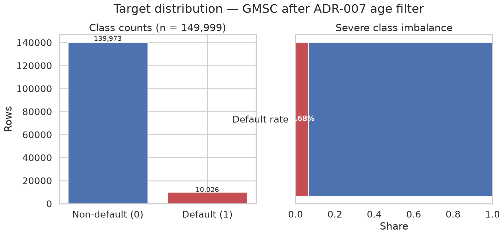
| 클래스 | 행 | 비율 |
|---|---|---|
| 비부도 (0) | 139,973 | 93.32% |
| 부도 (1) | 10,026 | 6.68% |
부도 1건당 비부도가 약 14건이다. 이 불균형이 이후 결정 세 가지를 만들었다.
| 결정 | 이유 | 장 |
|---|---|---|
층화 분할 (stratify=y) | 무작위 분할이면 세트마다 부도율이 흔들린다 | 3.8 |
class_weight / SMOTE 비교 | 가중 없이 학습하면 소수 클래스를 무시한다 | 5.5 |
| 승인 임계값 0.30 | 0.5 에서는 재현율이 거의 0 에 수렴한다 | 5.6, ADR-003 |
또 하나, 이 부도율은 명세의 상관 요건을 해석하는 기준이 된다. 부도율 6.68% 인 이진 타겟과의 점이연상관 0.30 은 단일 변수로 AUC 0.81 을 주는 매우 강한 조건이다(4.3절).
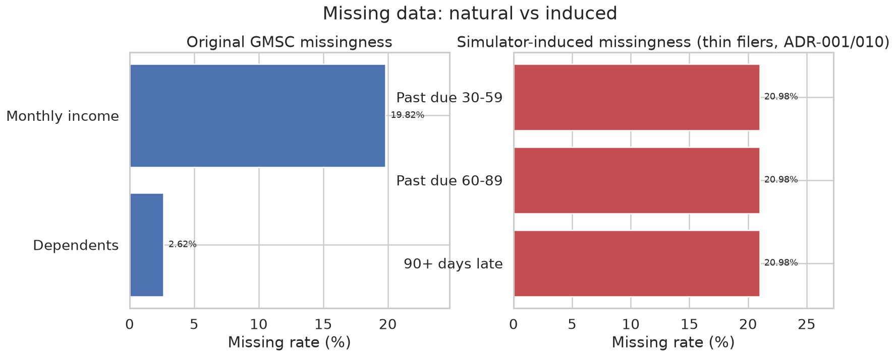
| 컬럼 | 결측률 | 출처 | 처리 |
|---|---|---|---|
MonthlyIncome | 19.82% | GMSC 원본 | train 중앙값 대체 |
NumberOfDependents | 2.62% | GMSC 원본 | train 중앙값 대체 |
| 연체 3컬럼 (각각) | 20.98% | 시뮬레이터 (씬파일러 missing_only + both) | 센티넬 −1 + 결측 플래그 |
두 종류의 결측은 의미가 다르기 때문에 다르게 처리했다.
원본 결측은 입력되지 않은 값이다. 중앙값으로 채워도 정보가 크게 왜곡되지 않는다. 반면 연체 3컬럼의 결측은 "이 사람에게는 연체 기록이라는 것이 없다"는 사실 자체이며, 씬파일러를 정의하는 신호다. 중앙값(0회)으로 채우면 기록이 없는 고객이 연체 한 번 없는 우량 고객으로 위장된다. 그래서 센티넬 −1 과 *_is_missing 플래그로 보존했다. 이 결정은 6.6절의 설명 생성까지 따라간다.
| 구분 | DebtRatio 중앙값 | 부도율 |
|---|---|---|
MonthlyIncome 있음 | 0.296 | 6.95% |
MonthlyIncome 결측 | 1,159 | 5.61% |
소득이 결측인 행에서 부채비율 중앙값이 1,159 로 뛴다. 분모인 소득이 없어 비율 대신 부채 금액이 기록된 것으로 보인다. 3.4절의 DebtRatio 극단값 대부분이 여기서 온다. 트리 모델은 이 불연속을 분기로 흡수할 수 있지만, 선형 모델에는 불리한 구조다.
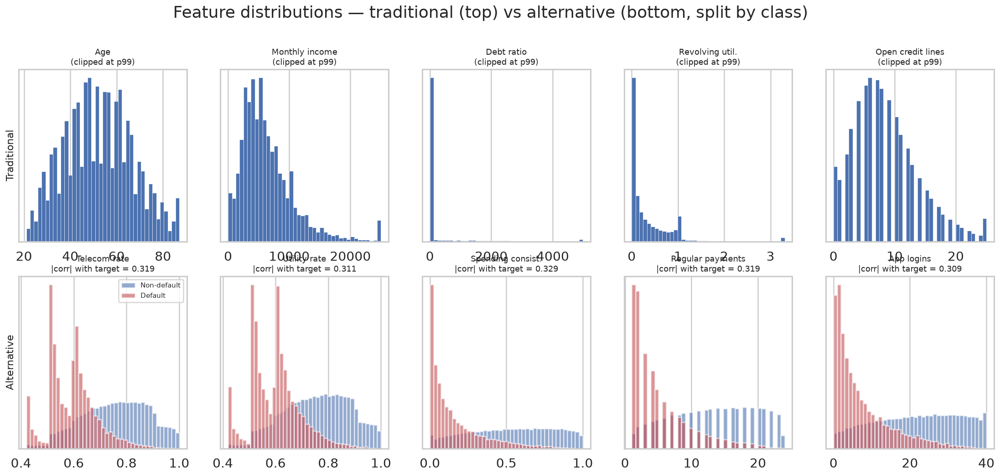
위 행은 전통 피처(99 백분위에서 잘라 그림), 아래 행은 대안 피처를 클래스별로 겹쳐 그렸다.
| 피처 | 중앙값 | 99 백분위 | 최댓값 | 최대 z |
|---|---|---|---|---|
RevolvingUtilizationOfUnsecuredLines | 0.154 | 1.09 | 50,708 | 203.0 |
DebtRatio | 0.367 | 4,979 | 329,664 | 161.6 |
MonthlyIncome (결측 제외) | 5,400 | 25,000 | 3,008,750 | 208.7 |
age | 52 | 87 | 109 | 3.8 |
NumberOfOpenCreditLinesAndLoans | 8 | 24 | 58 | 9.6 |
NumberOfTimes90DaysLate | 0 | 3 | 98 | 23.4 |
각주: 149,999행, 결측 행은 해당 피처 계산에서 제외. z = (최댓값 − 평균) / 표본 표준편차.
전통 피처는 실제 금융 데이터답게 꼬리가 매우 두껍다. 이상치는 제거하지 않았다. 트리 모델은 순위만 쓰므로 극단값에 강건하고, 이상치 행 자체가 위험 신호를 담고 있기 때문이다.
| 지표 | 값 |
|---|---|
| 소진율 > 1 인 행 | 2.21% |
| 부도율 (소진율 > 1) | 37.25% |
| 부도율 (소진율 ≤ 1) | 5.99% |
| 타겟과의 피어슨 상관 | −0.002 |
| 타겟과의 스피어만 상관 | +0.240 |
한도를 넘겨 쓴 고객의 부도율은 6배다. 그런데 피어슨 상관은 사실상 0 이다. 최댓값 50,708 같은 극단값이 선형 상관을 무너뜨리기 때문이다. 순위 상관으로는 +0.240 으로 전통 피처 중 가장 강한 편이다. 이 피처가 SHAP 전역 중요도 3위(6.2절)인 것과 피어슨 상관 0 인 것은 모순이 아니다. 같은 이유로 6.3절의 Dependence Plot 은 x 축을 99 백분위에서 잘라야 했다.
| 항목 | 값 |
|---|---|
| 연체 3컬럼에 96 또는 98 이 기록된 행 | 269 (세 컬럼 모두 같은 행) |
| 이 행들의 부도율 | 54.65% |
| 30-59일 vs 90일 연체 상관 (전체) | 0.984 |
| 30-59일 vs 90일 연체 상관 (269행 제외) | 0.218 |
GMSC 에는 연체 횟수로 불가능한 값 96, 98 이 269행에 있다. 실제 횟수가 아니라 특수 코드로 보인다. 이 269행이 연체 컬럼 간 상관을 0.98~0.99 로 끌어올린다. 제외하면 0.22~0.31 이다. 아래 상관행렬의 연체 3컬럼 블록은 이 코드의 영향을 받은 값으로 읽어야 한다.
이 코드는 별도로 처리하지 않았다. 트리 모델은 "96 이상"을 하나의 분기로 분리할 수 있고, 부도율 54.65% 라는 강한 신호를 담고 있어서다. 다만 선형 모델과 표준화에는 왜곡 요인으로 남는다.
대안 피처 5개는 원본에 없고 시뮬레이터가 만들었다(4장). 여기서는 결과물의 모양만 본다.
| 피처 | 범위 | 평균 | 평균 (비부도) | 평균 (부도) | 타겟 |corr| |
|---|---|---|---|---|---|
telecom_payment_rate | 0.42 ~ 1.00 | 0.747 | 0.758 | 0.592 | 0.3195 |
utility_payment_rate | 0.42 ~ 1.00 | 0.747 | 0.757 | 0.596 | 0.3107 |
spending_consistency | 0.00 ~ 1.00 | 0.508 | 0.533 | 0.160 | 0.3291 |
regular_payment_count | 1 ~ 24 | 12.68 | 13.23 | 4.89 | 0.3194 |
app_login_frequency | 0 ~ 40 | 20.29 | 21.23 | 7.17 | 0.3094 |
각주: 149,999행, 피어슨 상관 절댓값. train 만으로 잰 값은 10.2절 표 참조.
다섯 개 모두 명세 §4 의 0.3 ~ 0.5 범위에 든다. 3.4절 피처 분포 그림의 아래 행에서 부도(빨강)와 비부도(파랑)가 뚜렷이 갈리는 것이 보인다. 전통 피처의 타겟 상관(피어슨)이 최대 0.128(30-59일 연체)인 것과 대비된다. 이 차이가 5장에서 alternative_only 가 traditional_only 를 앞서는 이유이며, 실제 대안 데이터의 예측력이 아니라 명세 요건의 결과다.
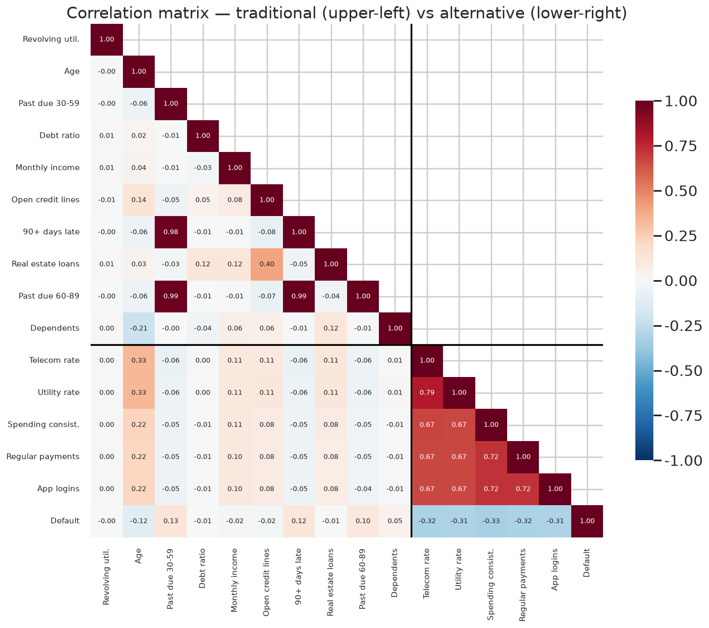
| 블록 | 상관 | 해석 |
|---|---|---|
| 대안 ↔ 대안 | 0.667 ~ 0.794 (평균 0.698) | 공유 잠재요인 "성실성" (ADR-001 v2, 4.4절) |
대안 ↔ age | 0.33 (통신·공과금) / 0.22 (나머지 셋) | 생성식의 연령 신호 + 20-34 편향 주입 |
대안 ↔ MonthlyIncome | 0.10 ~ 0.11 (log1p 소득과는 0.32) | 생성식의 소득 신호. 생성식이 log1p(소득) 을 써서 원 단위 상관은 낮게 나온다 |
| 연체 ↔ 연체 | 0.98 ~ 0.99 | 96/98 코드 269행의 영향 (3.4절) |
| 그 밖의 전통 ↔ 전통 | 대부분 |r| < 0.15 | 계좌 수 ↔ 부동산 대출 0.40 이 최대 |
대안 피처와 연령의 상관이 두 층으로 갈린다. 통신비·공과금 납부율은 0.33, 나머지 셋은 0.22 다. 앞의 두 피처에만 20-34 집단 하향 편향(ADR-002)이 주입됐기 때문이다. 편향을 주입하지 않고 (bias_ratio = 0) 같은 시뮬레이션을 돌리면 다섯 피처 모두 0.22 로 같아진다. 7.3절에서 본 연령대 격차의 두 원천(생성식의 연령 신호, 주입 편향)이 상관행렬에 이미 드러나 있다.
명세 §4 의 정의는 연체 관련 컬럼 2개 이상 결측 OR 신용카드 거래 이력 12개월 미만이다. GMSC 에는 거래 이력 컬럼이 없어 credit_history_months 를 합성했다(ADR-009).
| 판정 조건 | 행 |
|---|---|
| 연체 컬럼 2개 이상 결측 | 31,471 |
| 거래 이력 12개월 미만 | 27,121 |
| 교집합 (둘 다) | 13,592 |
| 합집합 = 씬파일러 | 45,000 (30.0%) |
두 조건이 서로 다른 집합을 잡아내므로 OR 정의가 실제로 작동한다. 초기 구현에서는 교집합 = 합집합 = 45,000 이라 정의가 형해화돼 있었다(4.6절, ADR-010).
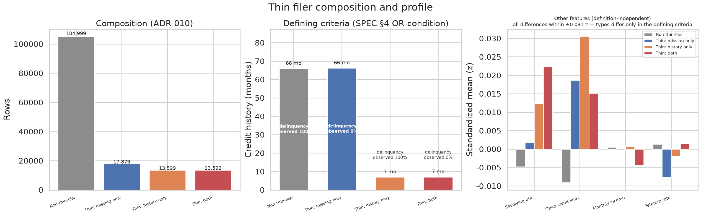
| 유형 | 행 | 씬파일러 중 비율 | 연체 3컬럼 | 거래 이력 (평균) |
|---|---|---|---|---|
| 일반 | 104,999 | — | 관측 | 12~120개월 (66.0) |
missing_only | 17,879 | 39.7% | 결측 | 12~120개월 (66.2) |
history_only | 13,529 | 30.1% | 관측 | 3~11개월 (7.0) |
both | 13,592 | 30.2% | 결측 | 3~11개월 (7.0) |
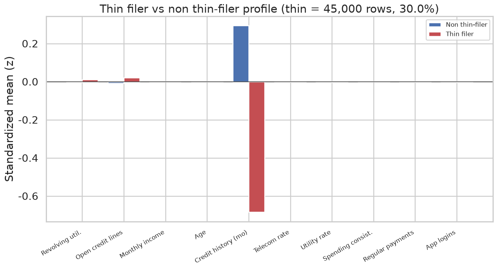
| 피처 (표준화 평균) | 일반 | 씬파일러 |
|---|---|---|
credit_history_months | +0.294 | −0.685 |
RevolvingUtilization | −0.005 | +0.011 |
NumberOfOpenCreditLinesAndLoans | −0.009 | +0.021 |
| 그 밖의 전통 · 대안 피처 | |z| ≤ 0.005 | |z| ≤ 0.005 |
| 부도율 | 6.66% | 6.74% |
씬파일러와 일반 고객은 정의 기준 말고는 거의 같다. 거래 이력만 크게 다르고, 소진율과 계좌 수의 미세한 차이는 씬파일러에게 주입한 노이즈(ADR-001)에서 온다. 부도율도 같다.
이것은 의도한 설계다. 씬파일러를 소득·연령 조건으로 뽑으면 씬파일러 여부가 보호 속성과 얽혀 7장의 공정성 분석과 교란된다(ADR-001 "버린 대안"). 무작위로 뽑았기 때문에 5.4절의 uplift 차이는 "누가 씬파일러인가"가 아니라 "전통 정보가 얼마나 결손됐는가" 로만 설명된다.
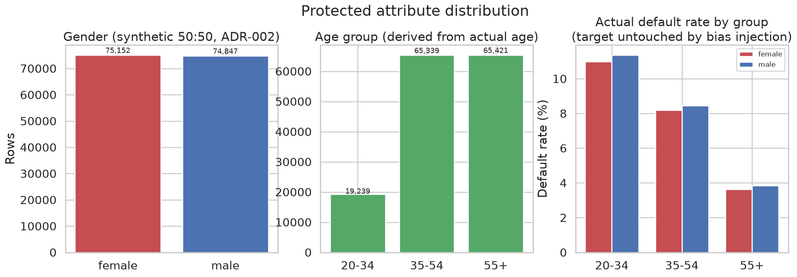
| 속성 | 집단 | 행 | 실제 부도율 |
|---|---|---|---|
| gender (합성) | female | 75,152 | 6.55% |
| male | 74,847 | 6.82% | |
age_group (실제 age 구간화) | 20-34 | 19,239 | 11.18% |
| 35-54 | 65,339 | 8.32% | |
| 55+ | 65,421 | 3.73% |
성별은 GMSC 에 없어 타겟과 독립인 무작위 50:50 으로 합성했다(ADR-002, 10.4절). 두 집단의 부도율이 사실상 같은 것은 그 때문이다.
연령대는 실제 부도율 자체가 다르다. 20-34 의 부도율은 55+ 의 3배다. 편향 주입은 피처만 바꾸고 타겟은 건드리지 않으므로(ADR-002) 이 차이는 GMSC 원본의 성질이다. 따라서 7장의 연령대 승인율 격차 (20-34 0.6789 vs 55+ 0.8764) 중 일부는 실제 위험 차이를 반영한 정당한 격차다. 승인율만 비교하는 DI Ratio 로는 이를 구분할 수 없고, 실제 라벨을 조건으로 오류율을 비교하는 Equalized Odds 를 함께 봐야 하는 이유가 여기에 있다(7.2절의 FPR 차이 0.1487).
| 단계 | 내용 | 근거 |
|---|---|---|
| ① 필터 | age < 18 1행 제거 → 149,999행 | ADR-007 |
| ② 시뮬레이션 | 대안 5변수, 씬파일러(유형·결측·노이즈), 보호 속성, 거래 이력 | ADR-001·002·009·010 |
| ③ 분할 | train / valid / test = 70 : 15 : 15, stratify=y, random_state=42 | 명세 §4 |
| ④ 결측 대체 | MonthlyIncome → 5,400, NumberOfDependents → 0 (train 중앙값) | 3.3절 |
| ⑤ 연체 결측 | 센티넬 −1 + *_is_missing 플래그 3개 | 3.3절 |
| ⑥ 스케일링 | 수치형에 StandardScaler (train 에만 fit) | 명세 §4 |
| ⑦ 인코딩 | 학습 피처에 범주형이 없어 One-Hot 대상 없음. 보호 속성은 인코딩하지 않고 원문 유지 | ADR-008 |
| 세트 | 행 | 부도율 |
|---|---|---|
| train | 104,999 | 6.6839% |
| valid | 22,500 | 6.6844% |
| test | 22,500 | 6.6844% |
각주: data/processed/{train,valid,test}.parquet. 각 24열 = 학습 피처 18 + 보호 속성 2 + 세그먼트 3 (is_thin_filer, thin_filer_type, credit_history_months) + 타겟 1.
층화 덕분에 세 세트의 부도율 차이가 0.001%p 이내다. valid 는 ThresholdOptimizer 적합(7장)에만 쓰고, test 라벨은 학습·튜닝·임계값 선택 어디에도 쓰지 않았다(명세 §7).
모델이 보는 18개 피처는 전통 10 + 결측 플래그 3 + 대안 5 다. 보호 속성과 세그먼트 컬럼 5개는 데이터에는 남지만 학습 입력에서 제외된다(ADR-008·009·010).
이 장은 본 프로젝트에서 가장 많은 설계 판단이 필요했던 부분을 다룬다. 대안 데이터를 시뮬레이션으로 만들어야 하는 과제에서, 처음 만든 시뮬레이터는 요구 규격을 모두 만족했지만 모델을 학습해보니 부도를 거의 완벽하게 예측했다. 이 장은 그 원인을 추적해 구조를 고치고, 남은 성능이 결함인지 아닌지를 판정한 과정을 기록한다.
관련 설계 결정: ADR-001 v2, ADR-009, ADR-010
과제 명세(SPEC §4)는 시뮬레이터에 다음을 요구했다.
| 요구사항 | 내용 |
|---|---|
| 대안 변수 5개 | telecom_payment_rate, utility_payment_rate, spending_consistency, regular_payment_count, app_login_frequency |
| 타겟 상관 | 각 변수와 SeriousDlqin2yrs 의 상관계수가 0.3 ~ 0.5 |
thin_filer_ratio | 조정하면 씬파일러 비율이 변한다 |
bias_ratio | 조정하면 성별·연령대별 승인율 편향이 변한다 |
단순히 대안 변수 5개를 붙이는 것만으로는 이 프로젝트의 질문에 답할 수 없다. "대안 데이터가 씬파일러에게 도움이 되는가"를 검증하려면, 씬파일러의 전통 피처가 실제로 쓸모없어야 한다. 그렇지 않으면 대안 데이터를 추가해 성능이 올라갔을 때 그것이 대안 데이터의 기여인지, 같은 정보를 두 번 넣은 결과인지 구분할 수 없다.
그래서 ADR-001 은 씬파일러에게 두 가지를 적용했다.
NumberOfTime30-59DaysPastDueNotWorse, NumberOfTime60-89DaysPastDueNotWorse, NumberOfTimes90DaysLateRevolvingUtilizationOfUnsecuredLines (로그정규 배수), NumberOfOpenCreditLinesAndLoans (정수 이동)씬파일러 선정은 무작위로 한다. 소득이나 연령을 조건으로 고르면 씬파일러 여부가 민감속성과 얽혀 7장의 편향 분석이 교란된다.
각 대안 변수를 다음과 같이 만들었다. t_z 는 표준화한 타겟이고, nuisance 는 소득·연령 신호다.
nuisance = 0.7 · z(log1p(MonthlyIncome)) + 0.3 · z(age)
m_i = standardize(0.6 · nuisance + 0.8 · eps_i) eps_i 는 변수별 독립 노이즈
m_i ← m_i 에서 t_z 성분 제거 후 재표준화 (직교화)
v_i = rho_i · t_z + sqrt(1 - rho_i²) · m_i직교화를 하면 corr(v_i, t_z) = rho_i 가 표본 기준으로 정확히 성립한다. 마지막으로 v_i 를 정규 CDF와 반올림으로 실제 단위(납부율 0.60~1.00, 결제 건수 1~24 등)로 옮기고, 변환 때문에 어긋난 상관을 고정점 반복으로 목표에 다시 맞췄다.
목표 상관 rho_i 는 규격 범위 0.30~0.50 에 균등 배치했다.
| 변수 | |corr| | 규격 0.30~0.50 |
|---|---|---|
telecom_payment_rate | 0.4855 | 충족 |
utility_payment_rate | 0.4398 | 충족 |
spending_consistency | 0.3991 | 충족 |
regular_payment_count | 0.3504 | 충족 |
app_login_frequency | 0.3031 | 충족 |
이 데이터로 18개 조합(알고리즘 3 × 피처그룹 3 × 불균형 처리 2)을 학습한 결과다.
| 피처 그룹 | test AUC (LightGBM, class_weight) |
|---|---|
traditional_only | 0.8342 |
alternative_only | 0.9957 |
combined | 0.9998 |
씬파일러 집단의 AUC uplift 는 +0.234 였다. 명세가 요구한 목표는 +0.03 이었으므로 8배에 해당한다. 신용평가 모델의 AUC 가 0.9998 이라는 것은 현실에서 성립할 수 없는 수치이며, 이 상태의 결과로는 어떤 분석도 신뢰할 수 없다.
먼저 확인한 것은 개별 상관이었다. 위 표에서 보듯 다섯 변수 모두 0.30~0.50 안에 있었다. 즉 명세를 위반해서 생긴 문제가 아니다. 문제는 개별 변수가 아니라 결합에 있었다.
이진 타겟에 대한 상관계수(점이연상관)는 두 집단의 분리 정도로 환산할 수 있다. 부도율 p = 0.0668 일 때
d = r / sqrt( p(1-p)(1 - r²) )| |corr| | Cohen's d | 그 변수 하나만으로 얻는 AUC |
|---|---|---|
| 0.15 | 0.60 | 0.666 |
| 0.20 | 0.81 | 0.718 |
| 0.25 | 1.03 | 0.768 |
| 0.30 | 1.26 | 0.813 |
| 0.35 | 1.49 | 0.855 |
| 0.40 | 1.75 | 0.892 |
| 0.45 | 2.02 | 0.923 |
| 0.49 | 2.25 | 0.944 |
대안 변수 하나가 전통 피처 13개를 모두 쓴 모델(0.834)을 이긴다. 명세가 요구한 상관 범위의 상단에서는 단일 변수 AUC 가 0.94 에 달한다. 이것만으로도 규격 자체가 관대하다는 점이 드러나지만, 실제 문제는 여기서 더 나아갔다.
v1 은 각 변수의 비(非)타겟 성분을 0.6 · nuisance + 0.8 · eps_i 로 채웠다. nuisance 는 공유되지만 가중치가 0.6 이고, 개별 노이즈 eps_i 가 0.8 로 더 크다. 그 결과 타겟을 고정하면 다섯 변수가 서로 거의 무관해졌다.
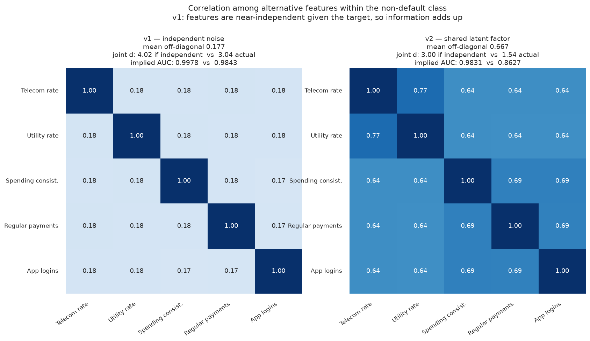
정상(부도=0) 집단 안에서 다섯 변수 간 상관의 평균은 v1 에서 0.177 이었다. 서로 다른 정보를 담은 것처럼 보이지만, 실제로는 같은 타겟 정보를 각자 독립적인 노이즈에 실어 다섯 번 반복 전달한 것이다.
조건부로 독립인 변수들은 정보가 제곱합으로 누적된다.
| 변수 | Cohen's d |
|---|---|
telecom_payment_rate | 2.224 |
utility_payment_rate | 1.961 |
spending_consistency | 1.743 |
regular_payment_count | 1.498 |
app_login_frequency | 1.273 |
| 결합 (조건부 독립 가정, sqrt(Σd²)) | 4.02 |
d = 4.02 는 Φ(4.02/√2) = AUC 0.998 에 해당한다. 관측된 alternative_only AUC 0.9957 과 같은 크기다.
해석 시 주의.
sqrt(Σd²)는 조건부 독립을 가정한 상한이다. 실제 공분산을 반영한 값(마할라노비스 거리)은 v1 에서 3.04(선형 판별 기준 AUC 0.984)로 조금 낮다. 트리 모델은 선형 판별보다 잘 맞추므로 관측 0.9957 이 그 사이에 놓인다. 두 수치를 같은 것으로 취급해서는 안 되지만, 자릿수와 방향은 원인 진단을 뒷받침한다.
코드에 오류는 없었다. 문제는 "다섯 개의 대안 변수가 타겟 외에는 서로 무관하다"는 암묵적 가정이었고, 그 가정이 현실과 맞지 않았다. 현실에서는 통신비를 성실히 내는 사람이 공과금도 성실히 낸다. 이 공통 요인이 없으면 다섯 변수는 독립적인 증거 다섯 개가 되어 정보가 그대로 합산된다.
비타겟 성분을 모든 변수가 공유하는 잠재요인과 개별 노이즈로 명시적으로 분리했다.
shared = standardize(0.6 · nuisance + 0.8 · common_noise) ← 다섯 변수가 공유
m_i = w · shared + sqrt(1 - w²) · eps_i ← w = latent_factor_strength
m_i ← t_z 성분 제거 후 재표준화
v_i = rho_i · t_z + sqrt(1 - rho_i²) · m_ishared 는 "금융 성실성"에 해당하는 잠재 특성이다. w 를 키우면 다섯 변수가 서로 강하게 상관되고, 각자가 전달하는 정보가 겹치므로 결합 판별력이 낮아진다.
w 는 config/config.yaml 의 simulator.latent_factor_strength 로 노출했다. 목표 상관도 규격 범위의 하단(generation_correlation = 0.31~0.35)만 쓰도록 바꿨다.
아래 AUC 는 모두 LightGBM · class_weight 조합으로 통일해 비교했다.
| 지표 | v1 | v2 |
|---|---|---|
| 클래스 내부 평균 상관 (정상 집단) | 0.177 | 0.667 |
| 결합 d — 조건부 독립 가정 | 4.02 | 3.00 |
| 결합 d — 실제 (공분산 반영) | 3.04 | 1.54 |
traditional_only test AUC | 0.8342 | 0.8338 |
alternative_only test AUC | 0.9957 | 0.8902 |
combined test AUC | 0.9998 | 0.9448 |
18개 조합 전체에서의 최고값은 combined 0.9460(LightGBM · SMOTE)이다. 5장 참조.
위 히트맵 오른쪽이 v2 다. 클래스 내부 상관이 0.64~0.77 로 올라가면서 결합 판별력이 절반 수준으로 떨어졌다. 개별 상관은 여전히 규격 안에 있다(0.3094~0.3497).
combined AUC 가 0.9998 → 0.9460 으로 내려왔지만 여전히 높아 보였다. w 를 더 키우면 계속 내려가는지 확인했다.
측정 조건. 아래 두 실험은 v2 구조를 확정하던 시점, 즉
bias_ratio = 0.1에서 측정했다. 이후 ADR-002 v3 으로bias_ratio를 0.3 으로 올렸으므로 최종 데이터의 값과 소수 셋째 자리에서 다르다 (최종:combined0.9448,alternative_only0.8902, 개별 상관 0.3099~0.3285). 두 실험의 목적은 레버를 움직였을 때의 반응 방향과 크기를 보는 것이므로 결론은 같다.
w생성 상관 0.31~0.35 고정, LightGBM class_weight, train 학습 → test 평가.
w | 클래스 내부 평균 상관 | traditional | alternative | combined |
|---|---|---|---|---|
| 0.85 | 0.692 | 0.8338 | 0.8963 | 0.9470 |
| 0.90 | 0.782 | 0.8338 | 0.8870 | 0.9420 |
| 0.92 | 0.821 | 0.8338 | 0.8843 | 0.9412 |
| 0.94 | 0.861 | 0.8338 | 0.8798 | 0.9396 |
w 를 0.85 에서 0.94 까지 올려도 combined 는 0.9470 → 0.9396, 0.007 밖에 움직이지 않았다. 공유요인은 대안 변수들 사이의 중복을 늘릴 뿐, 전통 피처와 대안 피처 사이의 관계는 건드리지 못하기 때문이다.
w = 0.85 고정.
| 생성 상관 | 실제 |corr| | alternative | combined | SPEC §4 (0.3~0.5) |
|---|---|---|---|---|
| 0.31~0.35 (채택) | 0.309~0.346 | 0.8963 | 0.9470 | 충족 |
| 0.26~0.30 | 0.260~0.297 | 0.8453 | 0.9206 | 위반 |
| 0.22~0.26 | 0.220~0.259 | 0.7980 | 0.8985 | 위반 |
| 0.18~0.22 | 0.181~0.219 | 0.7549 | 0.8788 | 위반 |
combined 를 0.90 아래로 내리려면 개별 상관을 0.22~0.26 까지 낮춰야 하고, 그러면 명세의 상관 요건을 위반한다. 명세를 지키는 한 combined 의 하한은 약 0.94 다.
두 실험이 가리키는 결론은 같다.
alternative_only 0.896 과 traditional_only 0.834 가 서로 다른 정보를 담고 있어 합치면 0.947 이 된다. 이것은 결함이 아니라 이 프로젝트가 증명하려는 현상 그 자체다.이 판정에 따라 목표 구간을 처음 설정한 0.85~0.90 에서 0.90~0.95 로 정정하고, latent_factor_strength = 0.85, generation_correlation = 0.31~0.35 를 최종 채택했다.
한계로 남는 부분. 명세의 상관 요건(0.3~0.5)을 부도율 6.68% 인 이진 타겟에 적용하면 AUC 0.94 대가 구조적 하한이 된다. 실제 신용평가 모델의 AUC 는 통상 0.85~0.88 이므로, 본 리포트의 절대 수치는 실무 성능의 추정치가 아니다. 자세한 내용은 10장에서 다룬다.
명세(SPEC §4)는 씬파일러를 다음으로 정의한다.
금융 연체 관련 컬럼 2개 이상 결측치이거나 신용카드 거래 이력이 12개월 미만인 고객
GMSC 에는 거래 이력 개월수 컬럼이 없어 ADR-009 로 credit_history_months 를 합성했다(씬파일러 3~11개월, 일반 12~120개월, 연령과 약한 양의 상관). 그런데 이렇게 만들자 씬파일러로 선정된 행이 두 조건을 항상 동시에 만족했다.
| v1 | v2 | |
|---|---|---|
| 연체 컬럼 2개 이상 결측 | 45,000 | 31,471 |
| 거래 이력 12개월 미만 | 45,000 | 27,121 |
| 교집합 | 45,000 | 13,592 |
합집합 (= is_thin_filer) | 45,000 | 45,000 |
교집합과 합집합이 같으면 OR 로 쓴 정의가 아무 일도 하지 않는다. 어느 한 조건만으로도 씬파일러 전체를 잡아낼 수 있기 때문이다.
선정된 씬파일러를 세 유형으로 나눴다.
| 유형 | 비중 | 연체 3컬럼 | 거래 이력 |
|---|---|---|---|
missing_only | 40% | 결측 | 12~120개월 (정상) |
history_only | 30% | 관측됨 | 3~11개월 (부족) |
both | 30% | 결측 | 3~11개월 (부족) |
그림은 3.6절(씬파일러 구성과 프로파일)에 실었다.
실제 분포는 missing_only 17,879건(39.7%) / history_only 13,529건(30.1%) / both 13,592건(30.2%) 으로 설정과 일치한다. 가운데 패널이 정의 기준의 분리를 보여준다. 오른쪽 패널은 정의에 쓰이지 않는 다른 피처들의 차이가 ±0.031 z 이내라는 것, 즉 세 유형이 정의 기준에서만 다르다는 것을 확인해준다.
유형을 나누지 않았다면 5장에서 확인한 대비를 볼 수 없었다.
XGBoost 기준, test 22,500행을 세그먼트로 나눠 측정했다.
| 세그먼트 | n | 전통 AUC | 통합 AUC | uplift |
|---|---|---|---|---|
| 일반 | 15,696 | 0.8548 | 0.9494 | +0.0946 |
history_only | 2,084 | 0.8422 | 0.9435 | +0.1013 |
missing_only | 2,704 | 0.7647 | 0.9328 | +0.1681 |
both | 2,016 | 0.7417 | 0.9299 | +0.1883 |
history_only 는 연체 이력이 온전히 관측되므로 전통 모델 AUC 가 0.842 로 일반 집단과 비슷하고, 대안 데이터의 기여도 +0.101 로 작다. 반대로 both 는 전통 AUC 0.742 로 가장 낮고 uplift 가 +0.188 로 가장 크다.
전통 피처의 정보량이 적을수록 대안 데이터의 기여가 커진다 — ADR-001 이 의도한 구도가 데이터로 확인되는 지점이다. 자세한 분석은 5장에서 다룬다.
credit_history_months 와 is_thin_filer, thin_filer_type 은 모델 입력에서 제외했다. credit_history_months < 12 는 is_thin_filer 의 정의 그 자체이므로, 이를 피처로 넣으면 모델이 "씬파일러 여부"를 직접 학습해 ADR-001 의 검증 구도가 무너진다. 연체 결측 여부는 *_is_missing 플래그로 이미 전통 피처 그룹에 반영돼 있다.
보호 속성(gender, age_group)도 같은 이유와는 다른 이유로 제외했다. ADR-008 과 7장에서 다룬다.
이 장은 세 가지 질문에 답한다. 대안 데이터가 실제로 도움이 되는가, 그 도움은 누구에게 큰가, 그리고 어떤 알고리즘과 불균형 처리를 골라야 하는가.
관련 설계 결정: ADR-001 v2 부기(불균형 처리), ADR-003, ADR-008, ADR-012
이 장의 공통 측정 조건. 데이터는
bias_ratio = 0.3로 생성한 최종 데이터셋. train 104,999행 / valid 22,500행 / test 22,500행 (70:15:15 층화 분할,random_state=42). CV 는 train 내부RepeatedStratifiedKFold(5×4), test 지표는 train 전체로 학습한 모델의 test 세트 평가값이다. 승인 임계값은 0.30.
| 축 | 수준 | 개수 |
|---|---|---|
| 알고리즘 | Logistic Regression, XGBoost, LightGBM | 3 |
| 피처 그룹 | traditional_only, alternative_only, combined | 3 |
| 불균형 처리 | class_weight='balanced', SMOTE | 2 |
| 조합 | 18 |
각 조합에 RepeatedStratifiedKFold(5×4) = 20 fold 를 돌렸다. 총 360 fits 에 최종 학습 18 fits 를 더해 소요 616.4초다(조합별 학습 시간 합 533.5초 + CV·평가 오버헤드).
fold 별 AUC 360건은 data/processed/fold_auc.csv 에 저장해 8장의 ANOVA 관측치로 쓴다.
| 그룹 | 피처 | 개수 |
|---|---|---|
traditional_only | GMSC 원본 10개 + 연체 결측 플래그 3개 | 13 |
alternative_only | 대안 데이터 5개 | 5 |
combined | 위 둘의 합집합 | 18 |
보호 속성(gender, age_group)과 세그먼트 컬럼(is_thin_filer, thin_filer_type, credit_history_months)은 어떤 그룹에도 포함되지 않는다(ADR-008, ADR-009).
SMOTE 는 학습 fold 안에서만 적용해야 한다. 전체 데이터에 먼저 SMOTE 를 걸면 합성 샘플이 검증 fold 로 넘어가 성능이 부풀려진다. 이를 구조적으로 막으려고 imblearn.pipeline.Pipeline 으로 감쌌다. 파이프라인은 fit 시에만 리샘플링하고 predict 시에는 하지 않는다.
| 알고리즘 | 피처 그룹 | 불균형 | CV AUC ± SD | test AUC | KS | F1 | PSI |
|---|---|---|---|---|---|---|---|
| LogReg | traditional | class_weight | 0.7646 ± 0.0056 | 0.7724 | 0.3977 | 0.1518 | 0.0008 |
| LogReg | traditional | smote | 0.7560 ± 0.0057 | 0.7664 | 0.3900 | 0.1505 | 0.0006 |
| LightGBM | traditional | class_weight | 0.8354 ± 0.0045 | 0.8338 | 0.5191 | 0.2472 | 0.0014 |
| LightGBM | traditional | smote | 0.8272 ± 0.0046 | 0.8275 | 0.5033 | 0.3619 | 0.0012 |
| XGBoost | traditional | class_weight | 0.8355 ± 0.0047 | 0.8355 | 0.5234 | 0.2430 | 0.0007 |
| XGBoost | traditional | smote | 0.8219 ± 0.0051 | 0.8229 | 0.5051 | 0.3480 | 0.0014 |
| LogReg | alternative | class_weight | 0.8926 ± 0.0038 | 0.8879 | 0.6318 | 0.2766 | 0.0006 |
| LogReg | alternative | smote | 0.8926 ± 0.0038 | 0.8879 | 0.6316 | 0.2784 | 0.0005 |
| LightGBM | alternative | class_weight | 0.8918 ± 0.0038 | 0.8902 | 0.6280 | 0.3159 | 0.0013 |
| LightGBM | alternative | smote | 0.8911 ± 0.0037 | 0.8900 | 0.6207 | 0.4560 | 0.0006 |
| XGBoost | alternative | class_weight | 0.8917 ± 0.0039 | 0.8893 | 0.6285 | 0.3048 | 0.0007 |
| XGBoost | alternative | smote | 0.8919 ± 0.0036 | 0.8886 | 0.6281 | 0.4374 | 0.0005 |
| LogReg | combined | class_weight | 0.9120 ± 0.0037 | 0.9099 | 0.6720 | 0.2999 | 0.0010 |
| LogReg | combined | smote | 0.9069 ± 0.0041 | 0.9050 | 0.6620 | 0.3002 | 0.0007 |
| LightGBM | combined | class_weight | 0.9443 ± 0.0027 | 0.9448 | 0.7477 | 0.4609 | 0.0008 |
| LightGBM | combined | smote | 0.9454 ± 0.0025 | 0.9460 | 0.7497 | 0.6219 | 0.0005 |
| XGBoost | combined | class_weight | 0.9451 ± 0.0024 | 0.9453 | 0.7502 | 0.4378 | 0.0005 |
| XGBoost | combined | smote | 0.9447 ± 0.0025 | 0.9446 | 0.7428 | 0.6159 | 0.0006 |
각주: bias_ratio=0.3 최종 데이터. CV 는 train 내부 20 fold, test 는 22,500행. 원본은 data/processed/model_results.csv. 굵게 표시한 행이 챔피언(5.5절).
| 지표 | 목표 | 결과 |
|---|---|---|
| Test AUC-ROC | ≥ 0.78 | 16/18 조합 충족, 최고 0.9460 |
| Test KS | ≥ 0.28 | 18/18 조합 충족, 최고 0.7502 |
| PSI (train↔test) | < 0.1 | 18/18 조합 충족, 최대 0.0014 |
| 씬파일러 AUC 향상 | ≥ +0.03 | 충족, +0.1518 (5.4절) |
AUC 목표를 못 넘긴 2개 조합은 모두 LogReg × traditional_only 다(0.7724 / 0.7664). 이는 베이스라인 조합이므로 이상하지 않다. 선형 모델에 전통 피처만 주면 GMSC 의 비선형 관계(연체 횟수의 계단 효과, 소진율의 극단값)를 잡지 못한다.
PSI 가 최대 0.0014 로 목표(0.1)보다 두 자리 작다. 층화 분할로 train/test 의 예측 점수 분포가 거의 같기 때문이다. 시계열 분할이 아니라 무작위 분할이므로 분포 이동을 검출하는 지표로서는 관대한 조건임을 감안해야 한다.
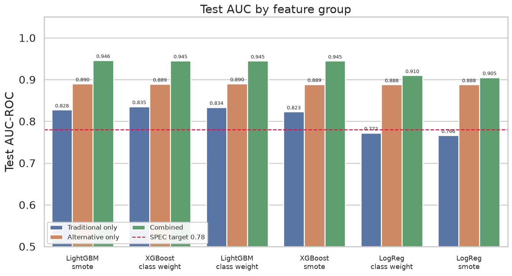
| 피처 그룹 | 최고 test AUC | 조합 |
|---|---|---|
traditional_only | 0.8355 | XGBoost / class_weight |
alternative_only | 0.8902 | LightGBM / class_weight |
combined | 0.9460 | LightGBM / SMOTE |
세 그룹의 순서가 여섯 개 (알고리즘 × 불균형) 조합 전부에서 동일하다: traditional < alternative < combined. 8장의 ANOVA 는 이 차이가 통계적으로 유의함을 확인한다(F=4245.65, Tukey 3쌍 모두 p_adj < 0.0001).
alternative_only 가 traditional_only 를 앞서는 것(+0.0547)은 실제 대안 데이터의 예측력을 의미하지 않는다. 4.3절에서 설명했듯 명세가 요구한 상관 요건(0.3~0.5)이 부도율 6.68% 인 타겟에서는 매우 강한 조건이기 때문이다. 의미 있는 것은 통합 시 추가 이득(0.8902 → 0.9460, +0.0558)이며, 이는 두 정보원이 서로 다른 것을 담고 있다는 증거다.
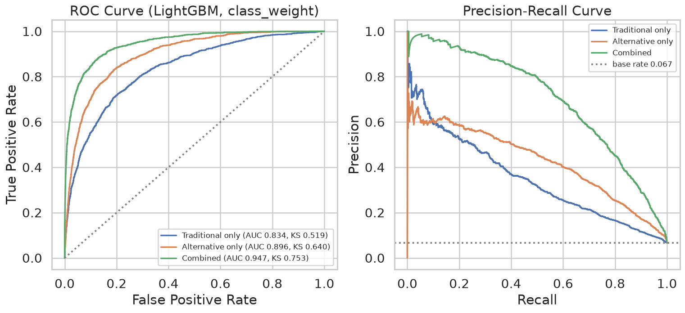
ROC 곡선에서 combined 가 낮은 FPR 구간에서 특히 유리하다. 심사에서 실제로 쓰는 구간은 FPR 0.1~0.3 대이므로 이 영역의 개선이 실질적이다.
PR 곡선은 다른 이야기를 한다. 기저 부도율이 0.067 이라 정밀도의 절대 수준이 낮다. combined 도 recall 0.9 지점에서 정밀도가 0.3 을 넘지 못한다. 임계값 선택 문제는 5.6절과 10장에서 다룬다.
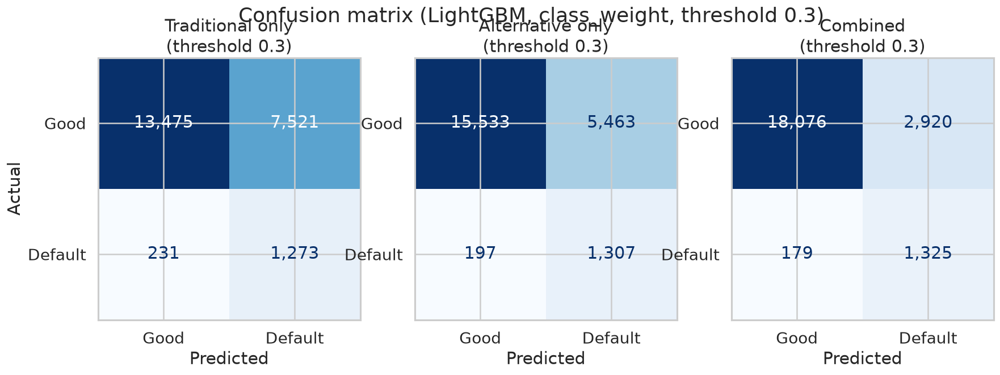
대안 데이터가 누구에게 도움이 되는지를 본다. 같은 챔피언 알고리즘(XGBoost)으로 traditional_only 와 combined 를 각각 학습하고, test 세트를 세그먼트로 나눠 AUC 를 비교했다.
| 세그먼트 | n | 부도율 | 전통 AUC | 통합 AUC | uplift |
|---|---|---|---|---|---|
| 전체 | 22,500 | 0.0668 | 0.8355 | 0.9453 | +0.1098 |
| 일반 (비씬파일러) | 15,696 | 0.0672 | 0.8548 | 0.9494 | +0.0946 |
| 씬파일러 전체 | 6,804 | 0.0661 | 0.7831 | 0.9349 | +0.1518 |
└ history_only | 2,084 | 0.0643 | 0.8422 | 0.9435 | +0.1013 |
└ missing_only | 2,704 | 0.0632 | 0.7647 | 0.9328 | +0.1681 |
└ both | 2,016 | 0.0719 | 0.7417 | 0.9299 | +0.1883 |
각주: XGBoost · class_weight, test 22,500행. bias_ratio=0.3. 원본은 data/processed/thin_filer_uplift.csv. LightGBM·LogReg 결과도 같은 파일에 있고 순서는 동일하다.
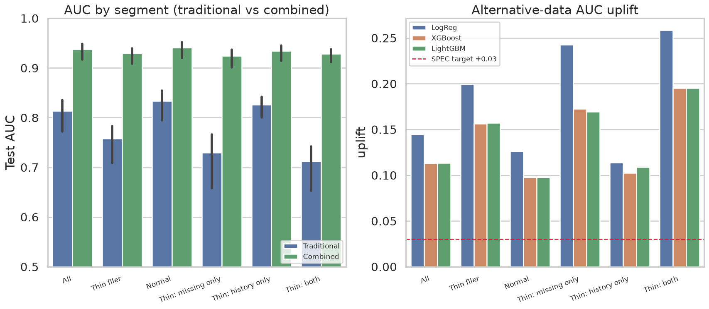
전통 AUC 열이 순서를 결정한다. history_only 는 연체 3컬럼이 온전히 관측되므로 전통 모델이 0.8422 로 일반 집단(0.8548)과 거의 같다. 반면 both 는 연체 기록이 없고 거래 이력도 짧아 전통 모델이 0.7417 까지 떨어진다.
그리고 uplift 는 그 역순이다.
| 세그먼트 | 전통 AUC | uplift |
|---|---|---|
| 일반 | 0.8548 | +0.0946 |
history_only | 0.8422 | +0.1013 |
missing_only | 0.7647 | +0.1681 |
both | 0.7417 | +0.1883 |
전통 피처의 정보량이 적을수록 대안 데이터의 기여가 커진다. 네 세그먼트에서 예외 없이 성립한다. both 의 uplift(+0.1883)는 일반 집단(+0.0946)의 2배다.
이것이 ADR-001 이 의도한 구도다. 씬파일러의 전통 피처 정보량을 구조적으로 줄여놓았기 때문에, 대안 데이터의 기여를 "누수가 아닌 결과"로 읽을 수 있다. 그리고 ADR-010 의 유형 분화가 없었다면 씬파일러를 한 덩어리(+0.1518)로만 볼 수 있었고, history_only 와 both 사이의 1.9배 차이는 드러나지 않았다.
주목할 점이 하나 더 있다. combined 의 AUC 는 0.9299 ~ 0.9494 로 세그먼트 간 편차가 작다(0.0195). 전통 모델의 편차는 0.1131(0.7417 ~ 0.8548)이다.
즉 대안 데이터를 넣으면 씬파일러와 일반 고객 사이의 평가 품질 격차가 줄어든다. 금융 포용성 관점에서 이것이 대안신용평가의 핵심 논거다. 다만 이 수치는 시뮬레이션의 산물이며 실제 크기를 나타내지 않는다(10장).
class_weight 채택9개 (피처그룹 × 알고리즘) 쌍 전체를 비교했다.
| 피처 그룹 | 알고리즘 | class_weight | SMOTE | 차이 |
|---|---|---|---|---|
| traditional | XGBoost | 0.8355 | 0.8229 | +0.0126 |
| traditional | LightGBM | 0.8338 | 0.8275 | +0.0063 |
| traditional | LogReg | 0.7724 | 0.7664 | +0.0059 |
| alternative | XGBoost | 0.8893 | 0.8886 | +0.0007 |
| alternative | LightGBM | 0.8902 | 0.8900 | +0.0002 |
| alternative | LogReg | 0.8879 | 0.8879 | −0.0001 |
| combined | XGBoost | 0.9453 | 0.9446 | +0.0006 |
| combined | LightGBM | 0.9448 | 0.9460 | −0.0013 |
| combined | LogReg | 0.9099 | 0.9050 | +0.0049 |
각주: test AUC 기준, bias_ratio=0.3 최종 데이터.
class_weight 가 9쌍 중 7쌍에서 우세하고, 1쌍은 사실상 동등하다 (LogReg alternative_only, 반올림 전 차이 −0.00005). traditional_only 에서는 차이가 뚜렷하고(+0.0059 ~ +0.0126), 대안 피처가 들어가면 차이가 거의 사라진다. SMOTE 가 실질적으로 앞선 경우는 LightGBM combined 한 쌍뿐이며, 그 차이 0.0013 은 CV 표준편차(±0.0025) 미만이다.
F1 은 이야기가 다르다.
| 조합 | class_weight F1 | SMOTE F1 | class_weight (P / R) | SMOTE (P / R) |
|---|---|---|---|---|
| XGBoost combined | 0.4378 | 0.6159 | 0.2899 / 0.8936 | 0.5506 / 0.6988 |
| LightGBM combined | 0.4609 | 0.6219 | 0.3121 / 0.8810 | 0.5867 / 0.6616 |
SMOTE 의 F1 이 크게 높지만 이는 판별력이 나아진 것이 아니다. 정밀도가 0.29 → 0.55 로 오르고 재현율이 0.89 → 0.70 으로 내려간다. SMOTE 로 학습한 모델은 예측 확률이 위로 이동하므로 고정 임계값 0.30 에서 더 보수적으로 거절한다. 재현율을 정밀도로 바꾼 것이며, 순위 성능(AUC·KS)은 그대로다.
성능이 사실상 동등하므로 다른 기준으로 판단했다.
SMOTE 는 원본에 존재하지 않는 합성 샘플로 학습한다. 이 모델의 SHAP 기여도를 고객에게 대출 거절 사유로 제시하면, 실재하지 않는 데이터에서 학습된 관계를 근거로 불이익 처분을 설명하는 셈이 된다. 신용정보법 제36조의2(자동화평가 결과에 대한 설명 및 이의제기)의 설명 의무를 고려해
class_weight='balanced'를 채택한다.
SMOTE 는 명세 §2 의 "불균형 처리 기법 2개 이상 비교" 요건을 위해 비교 실험으로 계속 학습·기록한다.
combined · class_weight 기준 test AUC 는 XGBoost 0.9453, LightGBM 0.9448, LogReg 0.9099 다. 8장의 ANOVA 사후검정 결과는 다음과 같다.
| 비교 | 평균 차이 | p_adj | 유의 |
|---|---|---|---|
| XGBoost vs LogReg | +0.0331 | < 0.0001 | 예 |
| LightGBM vs LogReg | +0.0323 | < 0.0001 | 예 |
| XGBoost vs LightGBM | +0.0008 | 0.6468 | 아니오 |
부스팅 계열 두 개는 통계적으로 구분되지 않는다. 따라서 "XGBoost 가 가장 성능이 좋다"는 서술은 데이터가 뒷받침하지 않는다.
XGBoost 를 고른 근거는 ADR-012 에 기록했다. SHAP TreeExplainer 지원 성숙도와 참조 자료의 풍부함이다. 설명가능성이 이 프로젝트의 핵심 산출물이므로 해석 도구와의 궁합을 우선했다. 성능이 동등하므로 학습·추론 비용이 병목이 되면 LightGBM 으로 교체해도 논거가 훼손되지 않는다.
| 항목 | 값 |
|---|---|
| 조합 | xgboost / combined / class_weight |
| test AUC / KS | 0.9453 / 0.7502 |
| precision / recall / F1 | 0.2899 / 0.8936 / 0.4378 |
| PSI | 0.0005 |
| 저장 위치 | models/champion_xgboost_v1.0.pkl |
| MLflow Registry | credit-scoring-champion v1, alias champion, tag stage=Production |
config.models.champion 에 조합을 명시했으므로, test AUC 최고 조합 (LightGBM/SMOTE 0.9460)이 아니라 이 조합이 서빙된다. 선정 근거가 성능이 아니기 때문이다.
ADR-003 의 규칙은 다음과 같다.
credit_score = 1000 × (1 − p_default)
등급 A ≥ 800 / B ≥ 650 / C ≥ 500 / D ≥ 350 / 그 미만 E
승인 판정 p_default < 0.30 이면 APPROVED임계값 0.30 은 재현율을 우선한 설정이다. 챔피언 모델의 재현율은 0.8936 으로 부도의 89% 를 잡아내지만, 정밀도는 0.2899 다. 거절한 건 가운데 실제 부도는 29% 에 그친다.
실무에서는 승인율 목표와 대손율 허용치를 함께 고려한 임계값 최적화가 필요하다. 본 프로젝트에서 0.30 을 유지한 이유는 임계값을 바꾸면 7장의 공정성 지표(DI, EO)와 Mitigation 결과가 모두 연동되어 바뀌기 때문이다. F1~F5 의 모든 수치를 하나의 임계값 위에서 정합시키기 위해 ADR-003 의 값으로 동결했다. 10장에서 한계로 다시 다룬다.
18개 조합을 모두 MLflow 에 기록했다.
| 기록 항목 | 내용 |
|---|---|
params | 알고리즘, 피처그룹, 불균형처리, 피처 수, n_splits, n_repeats, random_state, 모델 버전, 임계값 |
metrics | CV AUC 평균·표준편차, valid/test AUC, KS, F1, precision, recall, PSI |
metrics (step) | fold_auc 20 step — fold 별 AUC 를 시계열로 기록 |
artifacts | 모델 (cloudpickle 직렬화) |
tags | feature_group, algorithm, imbalance_method |
Model Registry 에는 챔피언을 등록하고 alias champion 과 tag stage=Production 을 붙였다. 이전 버전은 삭제하지 않고 stage=Archived 로 내린다.
백엔드는 SQLite(sqlite:///mlflow.db)를 쓴다. MLflow 3.x 가 파일 저장소를 유지보수 모드로 차단했고, Model Registry 는 애초에 파일 저장소에서 지원되지 않는다. docker compose up 후 localhost:5000 에서 확인할 수 있다.
traditional (0.8355) < alternative (0.8902) < combined (0.9460) 으로 동일하고, 성능 목표 4개를 모두 충족한다(AUC 16/18, KS 18/18, PSI 18/18, uplift +0.1518).history_only +0.1013 < missing_only +0.1681 < both +0.1883 로, 전통 AUC 가 낮은 순서와 정확히 역순이다. 통합 모델은 세그먼트 간 AUC 편차를 0.1131 → 0.0195 로 줄인다.class_weight 를 골랐고, 알고리즘은 XGBoost 와 LightGBM 이 통계적으로 구분되지 않아(p_adj=0.6468) SHAP 지원 성숙도로 XGBoost 를 골랐다.이 장은 세 가지 질문에 답한다. 모델은 무엇을 근거로 판단하는가(전역), 특정 고객은 왜 거절됐는가(지역), 그리고 그 설명을 고객에게 그대로 내보내도 되는가(생성 로직). 마지막 질문이 가장 까다롭다. SHAP 값은 수학적으로 정확하지만, 그것을 문장으로 옮기는 순간 틀린 말이 섞일 수 있기 때문이다.
관련 설계 결정: ADR-001 v2(대안 피처 생성 구조), ADR-008, ADR-012(SHAP 지원 성숙도)
이 장의 공통 측정 조건. 챔피언 모델
xgboost | combined | class_weight,bias_ratio = 0.3최종 데이터, SHAPTreeExplainer. 전역 해석은 test 세트에서random_state=42로 뽑은 2,000행 표본, 지역 해석은 test 22,500행에서 조건에 맞는 사례를 골랐다. 승인 임계값 0.30. 원본은data/processed/explain/(global_importance.csv,rejection_reasons_sample.json).
XGBoost 이진 분류기의 원시 출력은 부도의 로그 오즈다. SHAP 은 이 값을 피처별 기여로 분해한다.
f(x) = E[f(X)] + Σ φ_i (φ_i = 피처 i 의 SHAP 값)
p_default = 1 / (1 + exp(−f(x)))기준값 E[f(X)] 는 0.1183 이고, 확률로 바꾸면 0.5295 다. 실제 부도율(6.68%)이 아니라 0.5 근처에 놓이는 이유는 class_weight='balanced' 로 학습해 양성과 음성의 가중을 맞췄기 때문이다. 따라서 이 모델의 예측 확률은 가중된 척도이며, 승인 임계값 0.30 도 이 척도 위의 값이다. 로그 오즈로는 −0.8473 이다. 워터폴에서 f(x) 가 이 값보다 작으면 승인이다.
| 필드 | 관점 | 양수 | 음수 | 출처 |
|---|---|---|---|---|
shap_value_default | 부도 확률 | 불리 (부도 확률 ↑) | 유리 | SHAP 원본 |
shap_contribution | 신용도 | 유리 | 불리 | 명세 §3 예시 (기여도: -0.15) |
모델은 부도를 예측하므로 SHAP 원본은 "양수 = 고객에게 불리"다. 그런데 명세의 거절 사유 예시는 불리한 요인을 -0.15 로 적는다. 고객이 읽는 문장에서는 음수가 불리해야 직관에 맞으므로 shap_contribution = −φ 로 부호를 뒤집어 담고, 혼동을 막기 위해 원본 값도 shap_value_default 로 함께 반환한다. 워터폴 그림은 SHAP 원본(빨강 = 부도 확률 ↑)을 그대로 쓴다.
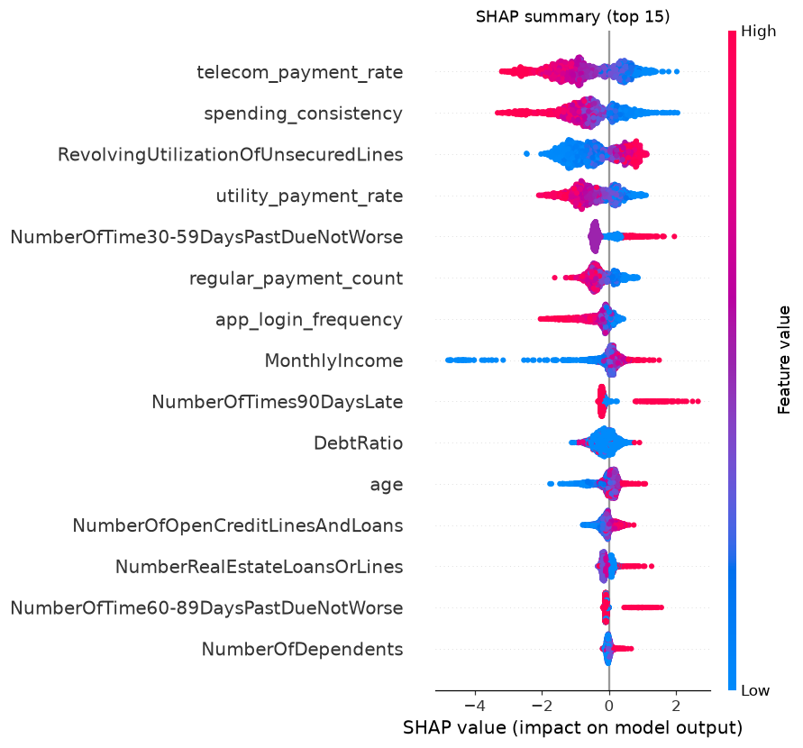
| 순위 | 피처 | 한글명 | 유형 | 평균 |SHAP| |
|---|---|---|---|---|
| 1 | telecom_payment_rate | 통신비 정상납부율 | 대안 | 1.0272 |
| 2 | spending_consistency | 소비 일관성 점수 | 대안 | 0.8200 |
| 3 | RevolvingUtilizationOfUnsecuredLines | 무담보 신용한도 소진율 | 전통 | 0.7654 |
| 4 | utility_payment_rate | 공과금 납부율 | 대안 | 0.6314 |
| 5 | NumberOfTime30-59DaysPastDueNotWorse | 30-59일 연체 횟수 | 전통 | 0.4052 |
| 6 | regular_payment_count | 정기결제 건수 | 대안 | 0.3806 |
| 7 | app_login_frequency | 앱 접속 빈도 | 대안 | 0.3279 |
| 8 | MonthlyIncome | 월 소득 | 전통 | 0.2884 |
| 9 | NumberOfTimes90DaysLate | 최근 90일 연체 횟수 | 전통 | 0.2519 |
| 10 | DebtRatio | 부채비율 | 전통 | 0.2325 |
| 11 | age | 연령 | 전통 | 0.2038 |
| 12 | NumberOfOpenCreditLinesAndLoans | 보유 신용계좌 수 | 전통 | 0.1617 |
| 13 | NumberRealEstateLoansOrLines | 부동산 담보대출 건수 | 전통 | 0.1254 |
| 14 | NumberOfTime60-89DaysPastDueNotWorse | 60-89일 연체 횟수 | 전통 | 0.1248 |
| 15 | NumberOfDependents | 부양가족 수 | 전통 | 0.0539 |
| 16~18 | 연체 결측 플래그 3종 | 기록 없음 표지 | 전통 | 0.0000 |
각주: test 2,000행 표본의 평균 |SHAP|(로그 오즈). 원본 global_importance.csv.
대안 피처 5개가 전부 7위 안에 있다(1·2·4·6·7위). 1위 telecom_payment_rate(1.0272)는 2위 spending_consistency 의 1.25배, 전통 피처 중 가장 높은 RevolvingUtilization(3위)의 1.34배다. 상위 15개 구성은 전통 10 · 대안 5 로, 피처 수로는 전통이 많지만 기여 크기는 대안에 쏠려 있다.
| 집계 | 대안 (5개) | 전통 (13개) | 배율 |
|---|---|---|---|
| 피처당 평균 |SHAP| | 0.6374 | 0.2010 | 3.2배 |
| 피처당 평균 |SHAP| (결측 플래그 3개 제외) | 0.6374 | 0.2613 (10개) | 2.4배 |
| 전체 |SHAP| 합에서 차지하는 비중 | 54.9% | 45.1% | — |
피처 18개 중 5개(28%)가 기여의 54.9% 를 차지한다. 다만 이 비중은 4.3절에서 설명한 시뮬레이터의 구조적 성질(명세의 상관 요건이 부도율 6.68% 에서 매우 강하다)을 반영하므로, "실제 대안 데이터가 전통 데이터보다 중요하다"는 근거로 읽으면 안 된다. 의미가 있는 것은 아래의 집단 간 비교다.
평균 |SHAP| 은 표본 전체를 뭉뚱그린 값이다. 고객 한 명 한 명의 설명에서 대안 피처가 얼마나 등장하는지를 따로 셌다.
| 세그먼트 | n | Top 5 중 대안 피처 수 (평균) | 1위가 대안 피처인 비율 |
|---|---|---|---|
| 전체 | 2,000 | 3.02 | 65.2% |
| 일반 | 1,425 | 2.95 | 64.1% |
| 씬파일러 | 575 | 3.20 | 67.8% |
└ history_only | 174 | 3.00 | — |
└ missing_only | 228 | 3.26 | — |
└ both | 173 | 3.34 | — |
각주: 행마다 |SHAP| 상위 5개 피처를 뽑아 대안 피처 개수를 셌다. test 2,000행 표본.
씬파일러 유형별 순서 history_only < missing_only < both 는 5.4절의 uplift 순서 (+0.1013 < +0.1681 < +0.1883)와 같다. 전통 피처의 정보가 적은 고객일수록 모델이 대안 피처를 더 많이 쓰고, 그만큼 대안 데이터를 넣었을 때의 성능 이득도 크다. 성능(5장)과 설명(6장)이 같은 구조를 가리킨다.
연체 결측 플래그는 학습 피처에 포함돼 있지만 SHAP 이 0.0000 이다. 트리가 이 플래그로 한 번도 분기하지 않았다는 뜻이다. 연체 컬럼 자체가 결측일 때 센티넬 −1 을 갖기 때문에(6.6절), 연체 횟수 < 0 이라는 분기 하나로 같은 정보를 얻을 수 있었던 것으로 보인다. 정보가 사라진 것이 아니라 연체 컬럼의 SHAP 값에 합쳐져 있다.
명세는 최소 2개 변수의 Dependence Plot 을 요구한다. 형태가 다른 두 피처를 대비하려고 대안 1위(telecom_payment_rate)와 전통 1위(RevolvingUtilization)를 골랐다 (config.explainer.dependence_features).
telecom_payment_rate: 거의 직선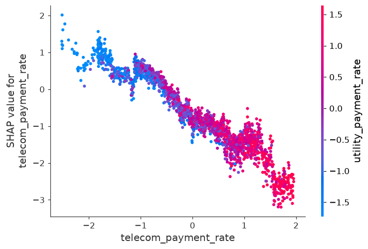
| 지표 | 값 |
|---|---|
| 피처값–SHAP 순위상관 (Spearman) | −0.957 |
| 선형 기울기 (표준화 1SD 당) | −0.941 로그 오즈 |
| 선형 기울기 (원 단위 1%p 당) | −0.073 로그 오즈 |
| SHAP 범위 | −3.20 ~ +2.01 |
각주: test 2,000행 표본. x 축은 표준화 값(원 단위 표준편차 0.1294).
납부율이 오를수록 부도 확률 기여가 단조롭고 거의 선형으로 내려간다. 색(상호작용 피처로 자동 선택된 utility_payment_rate)이 세로로 갈리지 않고 x 축을 따라 파랑에서 빨강으로 바뀐다. 두 피처가 강하게 함께 움직인다는 뜻이며, ADR-001 v2 의 공유 잠재요인("성실한 사람은 통신비도 공과금도 잘 낸다")이 그림에 그대로 드러난 것이다. 뚜렷한 상호작용은 보이지 않는다.
RevolvingUtilization: 이상치 때문에 x 축을 잘라야 한다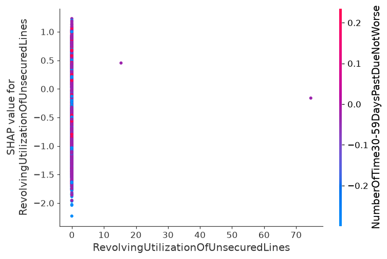
그림 각주: x 축은 원 단위이며 99 백분위(3.46)에서 잘랐다. 표본 2,000개 중 이를 넘는 이상치 20개는 그림에서 제외했다(SHAP 계산에는 포함). 제외된 점의 SHAP 은 0.01 ~ 1.06 으로 그림 오른쪽 평탄 구간과 같은 범위다.
처음에는 이 피처도 telecom 과 같은 방식(표준화 값, 전 범위)으로 그렸는데, 점 거의 전부가 x = 0 근처 세로 한 줄에 몰려 관계가 보이지 않았다.
| 지표 (표준화 축으로 그렸을 때) | 값 |
|---|---|
| 표준화 값 1~99 백분위 | −0.020 ~ −0.011 |
| |z| > 1 인 점 | 2,000개 중 2개 (최대 z = 74.6) |
| 원 단위 중앙값 / 99 백분위 / 최대 | 0.144 / 3.46 / 29,110 |
GMSC 원본의 극단 이상치(149,999행 기준 소진율 최대 50,708, z = 203.0, 3.4절)가 표준화 축을 늘려, 표본의 98% 가 폭 0.009 의 구간에 갇힌 것이다. 원 단위로 바꾸고 99 백분위에서 자르자 관계가 드러났다.
| 소진율 구간 | n | 평균 SHAP |
|---|---|---|
| 0 ~ 0.1 | 892 | −1.096 |
| 0.1 ~ 0.5 | 551 | −0.314 |
| 0.5 ~ 1.0 | 443 | +0.608 |
| 1.0 ~ 3.46 | 94 | +0.687 |
| 3.46 초과 (그림에서 제외) | 20 | 0.01 ~ 1.06 (범위) |
각주: test 2,000행 표본, 구간 상한 포함. 피처값–SHAP 순위상관(Spearman) +0.897, SHAP 범위 −2.46 ~ +1.12.
한도의 100% 까지는 가파르게 오르다가 그 뒤로는 평탄하다. 소진율 10% 이하인 고객은 부도 확률 기여가 크게 음수(−1.10)이고, 한도를 거의 다 쓰면 양수로 돌아선다. 한도를 넘겨 쓴 뒤로는 더 오르지 않는다. telecom 의 직선과 뚜렷이 다른 포화형 비선형 관계다. 색(regular_payment_count)은 세로로 갈리지 않아 뚜렷한 상호작용은 보이지 않는다.
두 그림의 대비는 이렇게 정리된다. 대안 피처는 시뮬레이터가 정규분포 기반으로 생성해 매끄러운 선형 관계를 갖고, 전통 피처는 실제 금융 데이터의 두꺼운 꼬리와 포화를 그대로 안고 있다.
Summary Plot 을 다시 보면 설명하기 어려운 점이 두 개 있다. MonthlyIncome 과 age 는 값이 클수록(빨강) SHAP 이 양수, 즉 부도 확률을 올린다. 원 데이터에서는 반대다.
| 피처 | 원 데이터: 피처–부도 상관 | 전통 전용 모델: 피처–SHAP | 통합 모델: 피처–SHAP |
|---|---|---|---|
MonthlyIncome | −0.062 | −0.516 | +0.769 |
age | −0.113 | −0.865 | +0.448 |
NumberOfOpenCreditLinesAndLoans | −0.033 | +0.710 | +0.831 |
각주: 모두 Spearman 순위상관. 원 데이터 열은 train 104,999행, 모델 열은 test 2,000행 표본. 전통 전용 모델은 챔피언과 같은 하이퍼파라미터로 traditional_only 13개 피처에 재학습했다 (같은 절차로 통합 모델을 재학습하면 챔피언의 +0.769 / +0.448 이 그대로 재현된다).
대안 피처가 들어가면서 부호가 뒤집혔다. 원인은 4장의 생성식에 있다.
대안 피처 = ρ·(타겟 신호) + … + (소득·연령 신호: nuisance = 0.7·소득 + 0.3·연령)대안 피처 값에는 타겟 신호와 소득·연령 신호가 섞여 있다. 같은 통신비 납부율 85% 라도 소득이 높은 사람이라면 그 85% 중 상당 부분이 "소득 덕분"으로 설명되고, 남는 성실성 신호는 작다. 모델은 이를 학습해 대안 피처의 좋은 값에서 소득·연령 몫을 빼는 방향으로 소득·연령에 양의 기여를 준다. 통계에서 말하는 설명 소거(explaining away) 효과다. NumberOfOpenCreditLines 는 두 모델에서 부호가 같으므로 이 효과와 무관하다.
이 현상은 시뮬레이터의 산물이지만 실무에 주는 경고는 실재한다. SHAP 은 모델이 학습한 관계를 충실히 보여줄 뿐, 그 관계가 인과적으로 타당한지는 말해주지 않는다. 이를 고객에게 "월 소득이 많아서 불리합니다"라고 전달하면 설명은 정확하되 납득할 수 없는 문장이 된다. 6.5절의 방향 일치 검증이 이 경우를 잡아낸다.
config.explainer.samples 에 네 가지 조건을 두고, 조건 구간의 중앙에 가장 가까운 test 고객을 골랐다.
| 사례 | 세그먼트 | 연령대 | 실제 부도 | p_default | f(x) | 점수 / 등급 | 결정 |
|---|---|---|---|---|---|---|---|
| 극단 거절 · 씬파일러 | both | 20-34 | 1 | 0.9748 | +3.655 | 25 / E | 거절 |
| 극단 거절 · 일반 | 일반 | 35-54 | 1 | 0.9751 | +3.668 | 25 / E | 거절 |
| 경계 거절 | both | 55+ | 0 | 0.3750 | −0.511 | 625 / C | 거절 |
| 경계 승인 | 일반 | 20-34 | 0 | 0.2499 | −1.099 | 750 / B | 승인 |
각주: 조건 구간 — 극단 p ∈ [0.95, 1.01), 경계 거절 [0.30, 0.45), 경계 승인 [0.20, 0.30). 임계값의 로그 오즈는 −0.847. 점수·등급은 ADR-003.
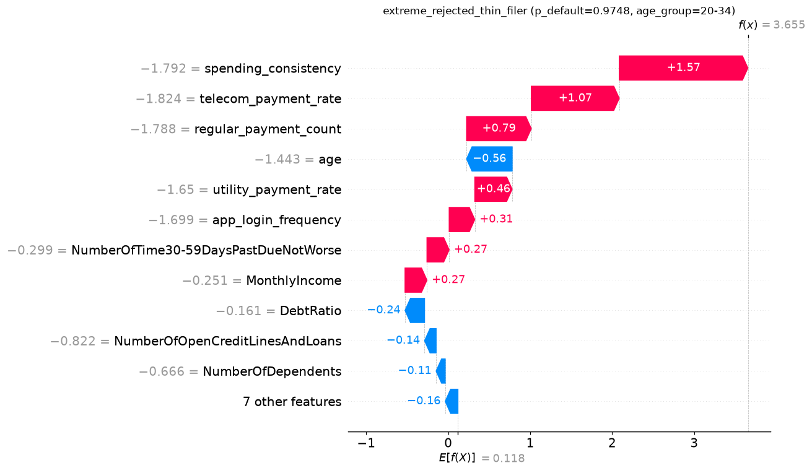
| 순위 | 씬파일러 (p=0.9748) 거절 사유 | 기여도 |
|---|---|---|
| 1 | 소비 일관성 점수가 0%로, 동일 연령대 평균(39%) 대비 낮습니다 | −1.57 |
| 2 | 통신비 정상납부율이 51%로, 동일 연령대 평균(62%) 대비 낮습니다 | −1.07 |
| 3 | 정기결제 건수가 1건으로, 동일 연령대 평균(10건) 대비 적습니다 | −0.79 |
| 4 | 공과금 납부율이 53%로, 동일 연령대 평균(62%) 대비 낮습니다 | −0.46 |
| 5 | 앱 접속 빈도가 1회로, 동일 연령대 평균(16회) 대비 적습니다 | −0.31 |
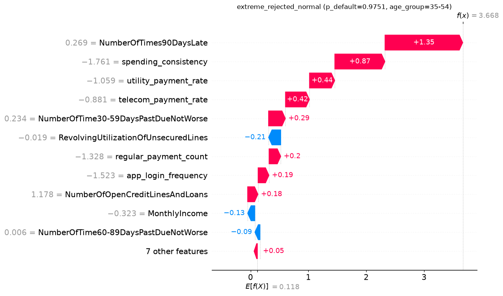
| 순위 | 일반 (p=0.9751) 거절 사유 | 기여도 |
|---|---|---|
| 1 | 최근 90일 연체 횟수가 1회로, 동일 연령대 평균(0회) 대비 많습니다 | −1.35 |
| 2 | 소비 일관성 점수가 1%로, 동일 연령대 평균(49%) 대비 낮습니다 | −0.87 |
| 3 | 공과금 납부율이 61%로, 동일 연령대 평균(75%) 대비 낮습니다 | −0.44 |
| 4 | 통신비 정상납부율이 63%로, 동일 연령대 평균(75%) 대비 낮습니다 | −0.42 |
| 5 | 30-59일 연체 횟수가 1회로, 동일 연령대 평균(0회) 대비 많습니다 | −0.29 |
각주: rejection_reasons_sample.json. 기여도는 shap_contribution(음수 = 불리).
두 사례의 차이는 분명하다. 씬파일러의 거절 사유는 5개 전부 대안 피처다. 전통 피처에 판단 근거가 없으니 모델이 대안 피처만으로 판단했다. 일반 고객은 1위가 90일 연체, 5위가 30-59일 연체로 전통과 대안이 섞인다. 6.2절의 집단 비교를 사례 하나가 그대로 보여준다.
그러나 이 설명들은 XAI 로서의 가치가 거의 없다. 두 고객은 로그 오즈 +3.66 으로 임계값(−0.85)과 4.5 이상 떨어져 있다. 소비 일관성 0%, 90일 연체 이력이 있는 고객이 거절된 이유는 설명하지 않아도 자명하고, 현실적인 한두 가지 변화로 결정이 바뀌지도 않는다. 설명가능성이 필요한 곳은 판단이 갈리는 경계다. 초기 구현은 극단 사례(당시 데이터에서 p=0.9997)만 저장했는데, 이 이유로 경계 구간 사례를 추가했다.
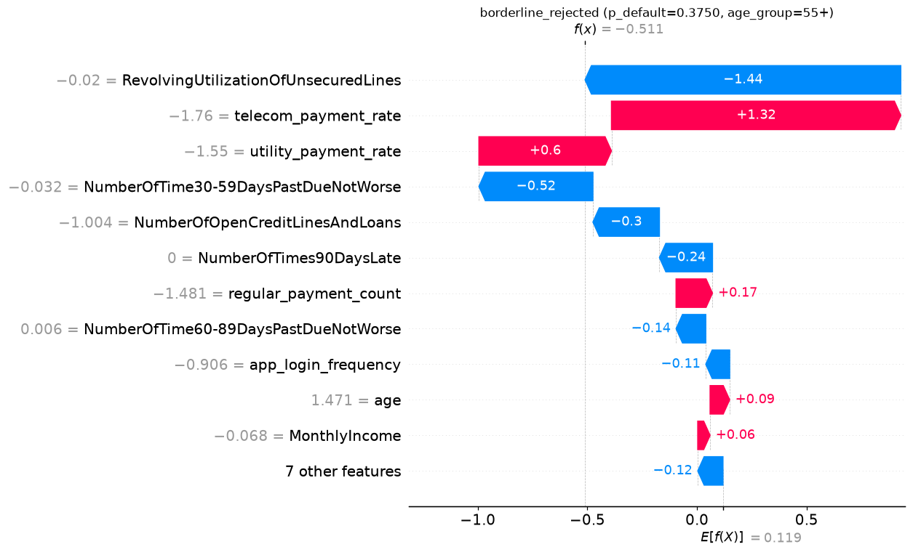
이 고객은 거래 이력 11개월, 연체 기록이 없는 both 유형 씬파일러(66세)이고, 실제로는 부도가 나지 않았다. 모델은 부도 확률 0.3750 으로 임계값 0.30 을 넘겨 거절했다. 정상 고객을 잘못 거절한 사례다.
로그 오즈로 보면 f(x) = −0.511, 임계값 −0.847 과의 차이는 0.337 에 불과하다. 워터폴에서 가장 큰 막대는 오히려 유리한 쪽이다. 신용한도 소진율이 0.94% 로 매우 낮아 −1.38 만큼 부도 확률을 끌어내렸다. 그 이득을 여러 개의 작은 불리 요인이 조금씩 되돌렸다.
| 순위 | 거절 사유 (POST /explain 응답) | 기여도 | 방향 일치 |
|---|---|---|---|
| 1 | 월 소득이 13,300으로, 동일 연령대 평균(6,579) 대비 많습니다 — 다른 항목과의 조합에 따른 영향입니다 | −0.40 | ✗ |
| 2 | 보유 신용계좌 수가 20개로, 동일 연령대 평균(9개) 대비 많습니다 — 다른 항목과의 조합에 따른 영향입니다 | −0.31 | ✗ |
| 3 | 앱 접속 빈도가 6회로, 동일 연령대 평균(23회) 대비 적습니다 | −0.21 | ✓ |
| 4 | 30-59일 연체 횟수 기록이 없습니다. 동일 연령대 평균은 0회입니다 | −0.21 | ✓ |
| 5 | 소비 일관성 점수가 25%로, 동일 연령대 평균(56%) 대비 낮습니다 | −0.17 | ✓ |
각주: 대시보드 기본 입력(config.dashboard.default_input, test idx 20837 과 동일 고객)으로 POST /explain 을 호출한 응답. 배치 산출물 rejection_reasons_sample.json 과 문장까지 일치한다.
1·2위는 6.3절의 설명 소거 효과와 씬파일러 노이즈 컬럼(ADR-001)에서 온 기여라 문장만으로는 납득하기 어렵다. 시스템은 이를 숨기지 않고 방향 불일치 표지를 붙였다.
거절 사유 Top 5 는 "현재 값이 결정을 어느 쪽으로 얼마나 밀었는가"에 답한다. 고객이 실제로 궁금한 것은 "무엇을 바꾸면 결정이 바뀌는가"다. 같은 입력에서 대안 피처만 바꿔 POST /predict 를 다시 호출했다.
| 변경 | 통신비 / 공과금 | p_default | 결정 |
|---|---|---|---|
| 없음 (현재) | 68% / 67% | 0.3750 | 거절 |
| 통신비·공과금 각 +2%p | 70% / 69% | 0.2922 | 승인 |
| 통신비만 +3%p | 71% / 67% | 0.2617 | 승인 |
| 공과금만 +7%p | 68% / 74% | 0.2415 | 승인 |
| 통신비·공과금 각 +5%p | 73% / 72% | 0.1780 | 승인 |
| 둘 다 55+ 연령대 평균으로 | 78% / 78% | 0.0552 | 승인 |
| (참고) 앱 접속 빈도 6 → 23회 | 68% / 67% | 0.2502 | 승인 |
| (참고) 소비 일관성 25% → 56% | 68% / 67% | 0.1776 | 승인 |
각주: 표시 이외의 입력은 전부 기본 입력과 동일. 최소 변화량은 1%p 격자로 탐색했다 (통신비·공과금 동시 +1%p 는 거절). 사례 분석이며 API 기능으로 구현하지는 않았다.
통신비와 공과금 납부율을 각각 2%p 만 올리면 승인된다. 연체 기록도 긴 거래 이력도 없는 씬파일러가 자기 행동으로 바꿀 수 있는 항목이다. 이것이 이 프로젝트가 경계 사례를 따로 저장한 이유이고, 대시보드의 기본 입력을 이 고객으로 둔 이유다.
다만 이 표에서 두 가지를 정직하게 적어둔다.
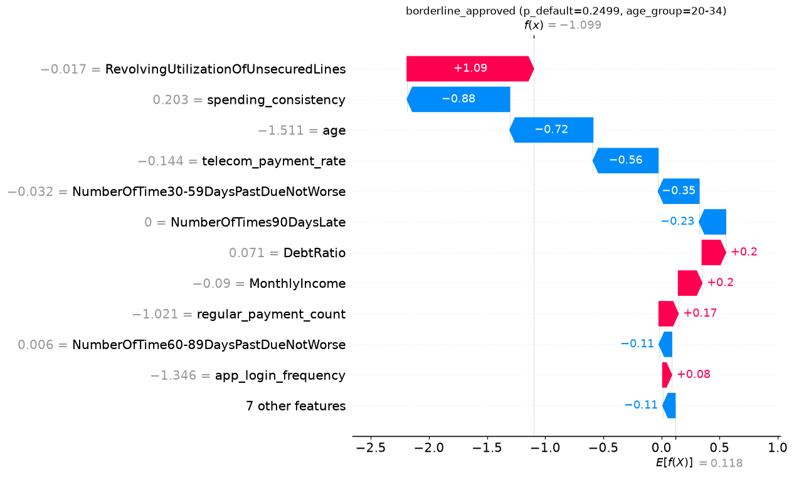
| 순위 | 승인 사유 | 기여도 |
|---|---|---|
| 1 | 소비 일관성 점수가 57%로, 동일 연령대 평균(39%) 대비 높습니다 | +0.88 |
| 2 | 연령이 30세로, 동일 연령대 평균(29세) 대비 많습니다 | +0.72 |
| 3 | 통신비 정상납부율이 73%로, 동일 연령대 평균(62%) 대비 높습니다 | +0.56 |
| 4 | 30-59일 연체 횟수가 0회로, 동일 연령대 평균(1회) 대비 적습니다 | +0.35 |
| 5 | 최근 90일 연체 횟수가 0회로, 동일 연령대 평균(1회) 대비 적습니다 | +0.23 |
contributing_factors(adverse=False) 는 부도 확률을 가장 크게 낮춘 요인을 같은 틀로 만든다. 1·3위가 대안 피처다.
2위는 주의해서 읽어야 한다. "연령이 30세로 동일 연령대 평균보다 많아서" 유리한 것이 아니다. SHAP 기여 +0.72 는 전체 표본 기준값에 대한 기여이고, 30세는 전체로 보면 젊은 편이라 6.3절의 설명 소거 효과로 유리하게 작용했다. 문장의 비교 기준(동일 연령대 평균)과 SHAP 의 기준(전체 기대값)이 다르기 때문에 생긴 우연한 일치다. 방향 일치 검증은 부호 모순만 잡을 수 있어 이 경우는 통과했다(6.5절).
연령은 GMSC 원본 피처라 학습에 포함된다. ADR-008 이 제외한 것은 구간화한 보호 속성 age_group 이다. 연령이 승인 사유 2위로 고객에게 제시되는 것은 7장의 연령대 격차와 같은 뿌리를 가진 문제이며, 실서비스라면 설명 문구에서 제외하거나 별도 검토가 필요하다.
① 모델 입력(스케일링된 값)으로 SHAP 계산 ← 표시값으로 계산하면 순위가 틀어진다 (9장 #1)
② 부도 확률 기여 φ 가 큰 순서로 Top 5 선택
③ 원 단위 값(display_row)을 따로 받아 표시
④ reference_value = 동일 연령대 평균 ← 씬파일러 센티넬 행 제외 (9장 #2)
⑤ 단위별 문장 템플릿 + 한글 조사 선택
⑥ 방향 일치 검증 → 불일치면 단서 문구 추가모델 입력과 표시값을 분리한 것이 핵심이다. SHAP 은 학습 때와 같은 스케일의 입력에서 계산해야 하고, 문장에는 "68%" 같은 원래 단위가 필요하다. 초기 구현은 역스케일한 값을 모델에 넣어 워터폴과 거절 사유가 서로 다른 피처를 가리켰다(9장 #1).
| 필드 | 명세 §3 필수 | 내용 |
|---|---|---|
feature | ✓ | 변수명 |
current_value | ✓ | 원 단위 현재값. 기록 없음이면 센티넬 −1 |
shap_contribution | ✓ | 신용도 관점 기여도 (음수 = 불리) |
explanation | ✓ | 자연어 설명 |
rank, feature_name_kr | 순위, 한글명 (config/feature_names.yaml) | |
reference_value | 동일 연령대 평균 | |
shap_value_default | SHAP 원본 (양수 = 불리) | |
direction_consistent | 부호–방향 일치 여부 |
| 단위 | 표기 | 비교어 | 대상 피처 예 |
|---|---|---|---|
percent | 68% | 높습니다 / 낮습니다 | 통신비·공과금 납부율, 소비 일관성 |
ratio | 0.20 | 높습니다 / 낮습니다 | 신용한도 소진율, 부채비율 |
count | 6회, 20개, 1건, 1명 | 많습니다 / 적습니다 | 연체 횟수, 계좌 수, 정기결제 |
amount | 13,300 | 많습니다 / 적습니다 | 월 소득 (원 데이터가 미국 기준이라 통화 단위를 붙이지 않음) |
years | 30세 | 많습니다 / 적습니다 | 연령 |
flag | 해당 / 비해당 | — | 결측 플래그 |
조사는 마지막 글자의 받침으로 고른다. 숫자는 한글로 읽었을 때의 받침을 쓴다 (13,300으로, 20개로, 68%로). 이를 틀리면 "소득이 13,300로" 같은 문장이 나와 자동 생성 티가 난다.
유리한 값인가 = (현재값 ≥ 참조값) if higher_is_better else (현재값 < 참조값)
일치 = (shap_contribution ≥ 0) == 유리한 값인가higher_is_better 는 피처마다 feature_names.yaml 에 정의했다. 불일치하면 "— 다른 항목과의 조합에 따른 영향입니다"를 붙여, 단순 비교로 설명되지 않는 기여임을 밝힌다. 경계 거절 사례의 1·2위가 여기에 해당한다.
이 검증에는 한계가 있다. 비교 기준(동일 연령대 평균)과 SHAP 기준(전체 기대값)이 다르므로 부호가 우연히 맞으면 통과한다(경계 승인 사례의 연령). 검증이 잡는 것은 "명백히 모순된 문장"뿐이며, 모든 문장이 인과적으로 옳다는 보증은 아니다.
씬파일러의 연체 3컬럼 결측은 중앙값(0회)으로 채우지 않았다. 채우면 연체 기록이 없는 씬파일러가 연체 한 번 없는 우량 고객으로 위장되기 때문이다. 대신 센티넬 −1 과 결측 플래그로 보존했다 (3장, config.preprocess). 모델은 이 정보를 실제로 쓴다. 경계 거절 사례의 4위가 "30-59일 연체 기록이 없음"이고 기여도는 −0.21, 불리다. 기록이 없다는 사실 자체가 위험 신호로 학습됐다. 씬파일러 문제의 본질이 모델 안에 그대로 들어가 있다.
전처리에서 내린 이 결정은 설명 단계까지 따라왔다. 센티넬을 일반 숫자로 다루면 세 곳에서 틀린 문장이 나온다.
| 위치 | 분기가 없을 때 | 조치 |
|---|---|---|
| 참조 평균 | 센티넬이 평균에 섞여 "동일 연령대 평균 −0회" | 플래그가 선 행을 평균 계산에서 제외 |
| 문장 템플릿 | "30-59일 연체 횟수가 −1회로, 평균 대비 적습니다" — 연체가 적은 우량 고객처럼 읽힌다 | "기록이 없습니다" 문장으로 분기 |
| 방향 검증 | −1 < 평균 이므로 "유리한 값"으로 판정 → 불리한 기여와 모순 → 오탐 표지 | 기록 없음이면 검증 생략 |
두 번째 행이 가장 위험하다. 문장은 문법적으로 멀쩡하고 수치도 틀리지 않았는데, 고객은 정반대로 이해한다. 정보가 없어서 불리하다는 사실을 연체가 적어서 유리하다로 뒤집어 전달한다.
'기록 없음'은 두 가지 형태로 설명 모듈에 들어온다.
| 경로 | 입력 형태 | 수정 시점 |
|---|---|---|
POST /explain | 요청 JSON 의 null → None | 13세션 (float(None) 500 오류와 함께) |
배치 산출 (run_explain) | 전처리를 거친 센티넬 −1 + 플래그 1 | 17세션 (이 장 작성 중 교차검증에서 발견) |
13세션에는 API 경로만 고쳐졌고, 배치 산출물 rejection_reasons_sample.json 에는 "−1회로" 문장이 남아 있었다. 리포트에 인용하려고 두 경로의 출력을 대조하다가 발견했다. 현재는 표시 행의 결측 플래그를 함께 확인해 두 경로가 같은 문장을 낸다(9장 #12). 수치 산출물(SHAP 값, 전역 중요도, 워터폴 4종)은 재생성 전후 md5 가 동일하며, 바뀐 것은 해당 문장 1건뿐이다.
신용정보법 제36조의2 는 개인신용평가 등이 자동화평가로 이루어진 경우, 신용정보주체가 평가 결과와 그 주요 기준, 기초정보의 개요에 대해 설명을 요구하고, 유리한 정보를 제출하거나 기초정보의 정정·삭제 및 재산출을 요구할 수 있도록 한다. 본 시스템의 대응을 정리하면 다음과 같다.
| 법의 요구 | 본 시스템 | 상태 |
|---|---|---|
| 평가 결과 설명 | POST /predict — 점수·등급·부도확률·승인 여부 | 구현 |
| 결과에 영향을 준 주요 기준 | POST /explain — 거절 사유 Top 5 자연어 + 전체 SHAP 값 + 기준값 | 구현 |
| 기초정보의 개요 | 각 사유의 current_value 와 reference_value(동일 연령대 평균) | 구현 |
| 평가 체계 전반의 기준 | 전역 중요도 · Summary Plot (대시보드 XAI 탭) | 구현 |
| 유리한 정보 제출 · 재산출 | 입력을 고쳐 /predict 재호출. 무엇을 고치면 되는지 안내는 6.4절 수동 분석뿐 | 부분 |
| 이의제기 절차 | — | 범위 밖 |
각주: 교육 목적의 대응 매핑이며 법적 요건 충족을 보증하지 않는다.
법이 요구하는 것은 설명의 존재이지만, 이 장에서 본 오류들은 설명의 충실성이 따로 확보돼야 함을 보여준다. 이 프로젝트에서 설명의 충실성을 위해 내린 결정을 모으면 다음과 같다.
| 결정 | 막는 문제 | 근거 |
|---|---|---|
| SHAP 을 모델 입력 스케일에서 계산 | 설명이 실제 판단과 다른 피처를 가리킴 | 9장 #1 |
class_weight 채택 (SMOTE 기각) | 실재하지 않는 합성 샘플로 학습한 관계를 거절 근거로 제시 | 5.5절, ADR-001 부기 |
| XGBoost 채택 | 해석 도구 성숙도 — 성능은 LightGBM 과 동등 | ADR-012 |
| '기록 없음' 분기 | 정보 결손을 우량 신호로 뒤집어 전달 | 6.6절 |
| 방향 불일치 표지 | 납득 불가능한 기여를 단정적 문장으로 제시 | 6.5절 |
telecom_payment_rate 1.0272, 2위의 1.25배) 피처당 평균 |SHAP| 은 전통의 3.2배다. 고객별 Top 5 중 대안 피처 수는 history_only 3.00 < missing_only 3.26 < both 3.34 로 5장의 uplift 순서와 같다.이 장은 "보호 속성을 모델에 보여주지 않으면 차별이 사라지는가"라는 질문에 답한다. 결론부터 말하면 사라지지 않는다. 그리고 편향이 전파되는 경로가 두 종류로 나뉘며, 그중 하나는 원인을 제거하는 것 자체가 예측력 손실을 수반한다.
관련 설계 결정: ADR-002 v3, ADR-004 v2, ADR-008
이 장의 모든 측정 조건. 챔피언 모델
xgboost | combined | class_weight, test 세트 22,500행, 승인 임계값p_default < 0.30,bias_ratio = 0.3. 7.3절의 민감도 표는 각bias_ratio수준마다 데이터를 재생성하고 챔피언 조합을 다시 학습해 측정했으며, 조건을 표 각주에 다시 적었다.
모델이 성별·연령을 입력으로 받으면 그것을 근거로 차별할 수 있다. 그건 자명하다. 이 프로젝트가 묻는 것은 그 다음이다. 보호 속성을 아예 보여주지 않아도 집단 간 격차가 생기는가. 생긴다면 그 격차는 다른 피처를 경유해 전파된 것이므로 간접 편향(proxy discrimination) 이다.
이를 확인하려고 세 겹으로 설계했다.
female 집단과 20-34 집단의 telecom_payment_rate, utility_payment_rate 관측치를 bias_ratio × 0.3 만큼 낮춘다(bias_ratio = 0.3 이면 집단당 0.09 하향, 두 집단에 모두 속하면 가산). 실제 부도 라벨은 건드리지 않는다.
즉 이것은 측정 편향(measurement bias) 이다. 실제 위험은 같은데 관측만 나쁘게 찍힌다. 타겟을 왜곡했다면 관측된 격차가 "실제 위험 차이"인지 "편향"인지 구분할 수 없어 Mitigation 의 의미가 사라진다.
편향 대상을 20-34 로 정한 것은 ADR-002 v2 의 개정 사항이다. 처음에는 55+ 를 대상으로 했는데, 대안 피처가 연령을 신호원으로 쓰기 때문에(4장) 55+ 는 편향을 주입하지 않아도 이미 유리했다. 여기에 하향을 걸면 주입 편향이 자연 격차를 상쇄해 "편향을 키웠는데 격차가 줄어드는" 해석 불가능한 상황이 됐다.
gender 와 age_group 은 데이터프레임에 남지만 모델 입력 X 에는 들어가지 않는다. 모델이 쓰는 것은 전통 피처 13개(결측 플래그 3개 포함) + 대안 피처 5개, 총 18개다.
보호 속성을 데이터에 남겨둔 이유는 두 가지다. 공정성 지표(DI Ratio, Equalized Odds) 계산에 필요하고, Fairlearn ThresholdOptimizer 의 sensitive_features 인자로 넘겨야 한다.
credit_history_months, is_thin_filer, thin_filer_type 도 같이 제외했다(4.6절).
ThresholdOptimizer 는 학습된 모델을 그대로 두고 집단별 임계값만 바꾼다. 덕분에 같은 모델·같은 예측 확률 위에서 전/후를 비교할 수 있다. 재학습이 필요한 Reweighting 계열을 쓰면 전/후에서 모델 자체가 달라져 비교가 흐려진다.
ThresholdOptimizer 는 valid 세트로 적합하고 test 세트로 평가했다. 테스트 라벨을 임계값 조정에 쓰면 명세 §7 의 "테스트 데이터 라벨을 학습에 사용 금지" 조항을 위반한다.
전체 승인율은 0.7940 이다.
| 보호 속성 | 집단 | n | 승인율 |
|---|---|---|---|
| gender | male | 11,319 | 0.8272 |
| female (불이익) | 11,181 | 0.7603 | |
| age_group | 55+ | 9,905 | 0.8764 |
| 35-54 | 9,742 | 0.7438 | |
| 20-34 (불이익) | 2,853 | 0.6789 |
각주: 챔피언 xgboost｜combined｜class_weight, test 22,500행, 임계값 0.30, bias_ratio=0.3.
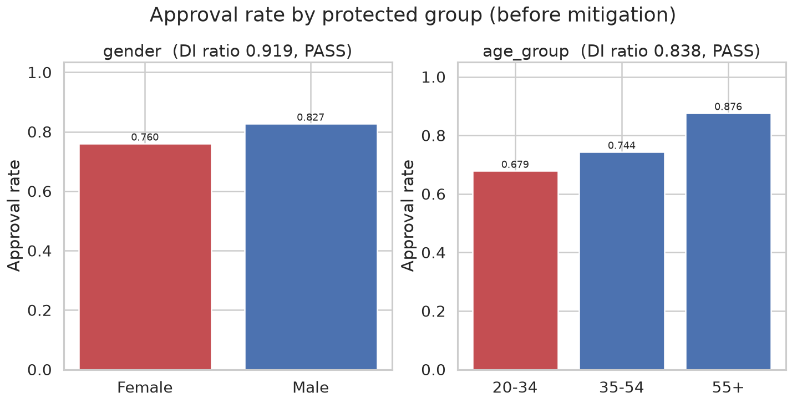
20-34 집단의 승인율이 55+ 보다 19.7%p 낮다. 모델은 연령대를 입력으로 받은 적이 없다.
명세 §1 의 용어 정의는 "보호 집단의 승인율을 비보호 집단의 승인율으로 나눈 비율"이다. 그런데 규제 실무에서 흔히 쓰는 4/5 규칙은 최저 승인율 집단 / 최고 승인율 집단으로 계산한다. 3집단인 age_group 에서 두 정의가 다른 값을 준다.
| 보호 속성 | DI (명세 정의: 보호 / 나머지 합산) | DI (관행: 최저 / 최고) | 기준 0.8~1.25 |
|---|---|---|---|
| gender | 0.9191 | 0.9191 | 둘 다 충족 |
| age_group | 0.8375 | 0.7747 | 명세 정의는 충족, 관행 정의는 미달 |
같은 데이터에서 결론이 뒤집히므로 두 값을 모두 보고한다. API(GET /fairness)도 di_ratio 와 di_ratio_min_max 를 함께 반환한다.
y=1 은 부도, 예측 양성은 "부도로 예측(=거절)"이다.
| 보호 속성 | 집단 | TPR | FPR |
|---|---|---|---|
| gender | female | 0.9113 | 0.1918 |
| male | 0.8763 | 0.1222 | |
| age_group | 20-34 | 0.9097 | 0.2464 |
| 35-54 | 0.9148 | 0.1946 | |
| 55+ | 0.8286 | 0.0978 |
| 보호 속성 | TPR 차이 | FPR 차이 | 기준 ≤ 0.10 |
|---|---|---|---|
| gender | 0.0350 | 0.0696 | 충족 |
| age_group | 0.0862 | 0.1487 | FPR 위반 |
age_group 의 FPR 차이 0.1487 이 의미하는 것은 이렇다. 실제로 부도가 아닌 고객을 잘못 거절하는 비율이 20-34 에서 24.6%, 55+ 에서 9.8% 다. 정상 고객이 부당하게 거절될 확률이 젊은 집단에서 2.5배 높다.
bias_ratio 민감도: 두 종류의 간접 편향bias_ratio 를 0.0 / 0.1 / 0.2 / 0.3 으로 바꿔가며 각 수준에서 데이터를 재생성하고 챔피언 조합(xgboost | combined | class_weight)을 다시 학습해 측정했다.
bias_ratio | 하향폭 | female | male | gender DI | 20-34 | 35-54 | 55+ | age DI (명세) | age DI (min/max) | 전체 승인율 | test AUC |
|---|---|---|---|---|---|---|---|---|---|---|---|
| 0.0 | 0.000 | 0.8055 | 0.8031 | 1.0030 | 0.6947 | 0.7531 | 0.8861 | 0.8470 | 0.7840 | 0.8043 | 0.9497 |
| 0.1 | 0.030 | 0.7805 | 0.8215 | 0.9502 | 0.6838 | 0.7508 | 0.8844 | 0.8358 | 0.7732 | 0.8011 | 0.9485 |
| 0.2 | 0.060 | 0.7698 | 0.8283 | 0.9293 | 0.6803 | 0.7494 | 0.8825 | 0.8332 | 0.7709 | 0.7992 | 0.9465 |
| 0.3 | 0.090 | 0.7603 | 0.8272 | 0.9191 | 0.6789 | 0.7438 | 0.8764 | 0.8375 | 0.7747 | 0.7940 | 0.9453 |
각주: 각 행마다 시뮬레이션 → 전처리 → 챔피언 조합 재학습 → test 평가. 임계값 0.30. src/fairness/sensitivity.py 로 재현 가능. 원본은 data/processed/fairness/bias_ratio_sensitivity.csv.
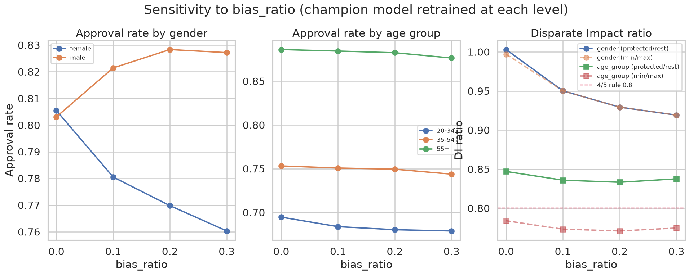
bias_ratio = 0 에서 gender DI 가 1.0030 이다. 편향을 주입하지 않으면 성별 간 승인율이 사실상 같다(female 0.8055 vs male 0.8031). 그리고 bias_ratio 를 올릴수록 DI 가 1.0030 → 0.9502 → 0.9293 → 0.9191 로 단조 감소한다.
따라서 성별 격차는 전적으로 주입한 측정 편향이 대안 피처를 경유해 전파된 결과다. 명세 §4 가 요구한 "bias_ratio 를 조정하면 성별/연령대별 승인율 편향이 변경된다"는 이 표로 실증된다.
성별은 GMSC 에 없어 무작위 50:50 으로 합성했다(ADR-002). 타겟과 독립이므로 편향을 주입하지 않으면 격차가 없는 것이 당연하다. 이 통제된 성질 덕분에 "주입한 만큼만 나타난다"를 깨끗하게 보일 수 있었다.
같은 표의 연령대 열은 전혀 다른 이야기를 한다. bias_ratio = 0 에서 이미 min/max DI 가 0.7840 으로 4/5 규칙에 미달한다. 그리고 0.3 까지 올려도 0.7747 로 거의 변하지 않는다 (−0.009).
원인은 4장의 시뮬레이터 구조에 있다. 대안 피처는 소득·연령을 신호원으로 생성된다.
nuisance = 0.7 · z(log1p(MonthlyIncome)) + 0.3 · z(age)연령이 높을수록 nuisance 가 커지고 대안 피처 값이 좋게 나온다. 학습 데이터에서 telecom_payment_rate 의 연령대별 평균(표준화 값)은 20-34 −0.978 / 35-54 +0.024 / 55+ +0.263 이다. 모델이 연령대를 보지 않아도 대안 피처를 통해 연령 정보를 간접적으로 학습한다.
| 성별 | 연령대 | |
|---|---|---|
| 편향의 출처 | 의도적으로 주입한 측정 편향 | 피처 생성 구조에 내재한 상관 |
bias_ratio = 0 에서 | DI 1.0030 (완전 균등) | min/max DI 0.7840 (이미 미달) |
bias_ratio 반응 | 단조 감소 (−0.084) | 거의 불변 (−0.009) |
| 원인 제거 | bias_ratio = 0 으로 두면 사라진다 | 연령 신호를 빼야 하는데 예측력이 줄어든다 |
실무적으로 후자가 훨씬 까다롭다. 편향을 주입한 적이 없어도, 대안 데이터가 보호 속성과 자연스럽게 상관되어 있으면 그 상관이 그대로 결정에 실린다. 그리고 원인을 제거하려면 피처에서 그 정보를 빼야 하는데, 그것은 예측력의 일부를 버리는 일이다. 4.5절의 w 레버 실험에서 확인한 것과 같은 구조다. 공유요인을 키워도 전통 피처와의 상보성은 줄지 않았고, 상관 자체를 낮추자 성능이 함께 내려갔다.
이것이 실제 대안신용평가에서 반복될 문제다. 통신 요금 납부 이력은 연령과 상관되어 있고, 앱 사용 빈도도 그렇다. 보호 속성을 입력에서 제외하는 것은 필요하지만 충분하지 않다.
ThresholdOptimizer(constraints="equalized_odds", objective="balanced_accuracy_score") 를 보호 속성별로 각각 적합했다.
| 지표 | gender 전 → 후 | age_group 전 → 후 |
|---|---|---|
| DI Ratio (명세 정의) | 0.9191 → 0.9942 | 0.8375 → 0.9433 |
| DI Ratio (min/max) | 0.9191 → 0.9942 | 0.7747 → 0.9245 |
| EO TPR 차이 | 0.0350 → 0.0106 | 0.0862 → 0.0384 |
| EO FPR 차이 | 0.0696 → 0.0064 | 0.1487 → 0.0155 |
| 전체 승인율 | 0.7940 → 0.8196 | 0.7940 → 0.8492 |
| 정확도 | 0.8466 → 0.8701 | 0.8466 → 0.8921 |
| AUC | 0.9453 → 0.8736 | 0.9453 → 0.8592 |
각주: valid 22,500행으로 적합, test 22,500행으로 평가. random_state=42.
기준을 위반했던 age_group 의 EO FPR 차이가 0.1487 → 0.0155 로 해소되고, min/max DI 도 0.7747 → 0.9245 로 4/5 규칙을 넘겼다. 승인율은 0.79 → 0.82~0.85 로 소폭 올라가는 데 그쳐 심사 기능이 유지된다.
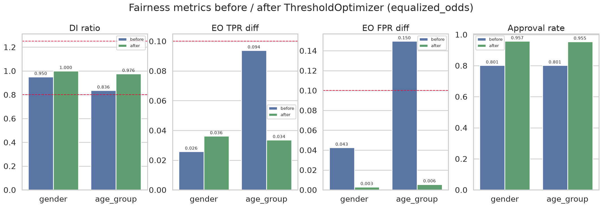
ThresholdOptimizer 는 집단마다 두 개의 임계값 규칙을 확률적으로 섞는다(보간).
| 보호 속성 | 집단 | 규칙 | 완화 후 승인율 |
|---|---|---|---|
| gender | female | 64.1% p>0.4492 / 35.9% p>0.4285 | 0.8172 |
| male | 1.5% p>0.4087 / 98.5% p>0.2878 | 0.8220 | |
| age_group | 20-34 | 38.1% p>0.7164 / 61.9% p>0.5644 | 0.8069 |
| 35-54 | 8.0% p>0.7107 / 92.0% p>0.5453 | 0.8376 | |
| 55+ | 51.2% p>0.4159 / 48.8% p>0.1956 | 0.8728 |
읽는 방식은 이렇다. 원래는 모든 집단에 p < 0.30 이면 승인이라는 단일 임계값을 썼다. 완화 후 20-34 는 p 가 0.56~0.72 미만이면 승인되고, 55+ 는 0.20~0.42 미만이어야 승인된다. 젊은 집단은 완화되고 고령 집단은 엄격해진다 — 편향 보정 방향이 의도와 맞다.
완화 후 AUC 가 0.9453 → 0.86 대로 떨어진다. 이것은 모델이 나빠진 것이 아니다.
완화 전 출력은 0~1 사이의 부도 확률이고, AUC 는 그 확률의 순위 품질을 재는 지표다. 완화 후 출력은 승인/거절이라는 이진 결정이다. 확률 순위 정보가 사라졌으므로 이진 벡터로 계산한 AUC 는 원리적으로 낮아진다. 실제로 이진 예측의 AUC 는 (TPR + TNR) / 2 와 같다. 즉 balanced accuracy 를 보고 있는 셈이다.
모델의 가중치도, 확률 출력도 바뀌지 않았다. 바뀐 것은 집단별 임계값뿐이다. 같은 표에서 정확도는 0.8466 → 0.8921 로 올랐다는 점도 함께 보아야 한다.
따라서 완화 전/후 비교는 AUC 가 아니라 DI Ratio, Equalized Odds, 승인율로 판단한다. AUC 는 완화 전 모델의 판별력을 보고할 때만 쓴다. API 응답 (
GET /fairness/mitigation)도 이 주의사항을note필드로 함께 반환한다.
처음에는 objective="accuracy_score" 로 적합했다. 그 결과는 이렇다.
| 지표 | 완화 전 | accuracy | balanced_accuracy (채택) |
|---|---|---|---|
| 전체 승인율 | 0.7940 | 0.9546 ~ 0.9572 | 0.8196 ~ 0.8492 |
| AUC | 0.9453 | 0.7389 ~ 0.7411 | 0.8592 ~ 0.8736 |
| DI Ratio (gender / age_group) | 0.9191 / 0.8375 | 1.0000 / 0.9759 | 0.9942 / 0.9433 |
각주: accuracy 열은 bias_ratio=0.1 데이터에서 측정한 값이다(ADR-004 v2 개정 시점). balanced_accuracy 열은 최종 데이터(bias_ratio=0.3) 기준이다.
accuracy 목적함수에서 공정성 지표는 더 좋아 보였다(DI 1.0000). 그러나 승인율이 0.79 에서 0.95 로 뛰었다. 부도율이 6.7% 인 데이터에서 정확도를 최대화하면 "거의 전부 승인"이 최적해가 되기 때문이다.
이것은 공정성 개선이 아니라 심사 기능의 상실이다. 공정성 지표가 좋아진 이유도 "모두를 승인하면 집단 간 승인율 격차가 사라진다"는 자명한 사실일 뿐이다. balanced_accuracy_score 는 TPR 과 TNR 의 평균이라 소수 클래스를 무시할 수 없다. 전부 승인하면 TPR 이 0 이 되어 목적함수가 0.5 로 떨어진다.
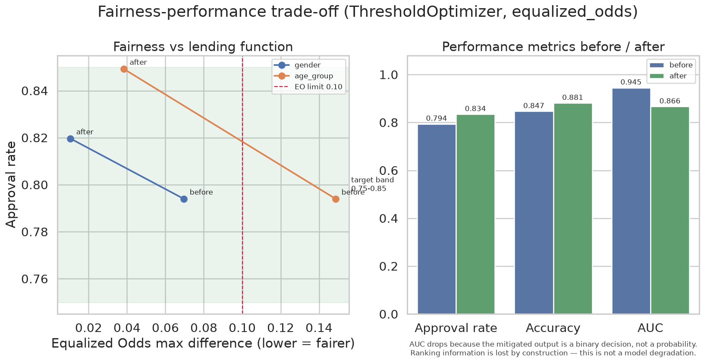
왼쪽은 공정성(Equalized Odds 최대 차이)과 심사 기능(승인율)의 관계다. 두 보호 속성 모두 완화 후 EO 차이가 기준선(0.10) 왼쪽으로 이동하고, 승인율은 목표 구간(0.75~0.85, 음영) 안에 머문다. age_group 의 이동 폭이 큰 것은 완화 전 위반 정도가 컸기 때문이다.
오른쪽은 승인율·정확도·AUC 의 전후 비교다. AUC 만 내려가고 정확도는 올라간다는 점이 앞 절에서 설명한 "순위 정보 소실"의 직접적인 증거다.
금융위원회 금융분야 AI 가이드라인과 신용정보법 제36조의2 는 자동화평가에 대해 설명가능성과 공정성을 요구한다. 본 시스템이 대응하는 방식은 다음과 같다.
| 요건 | 대응 |
|---|---|
| 자동화평가 결과 설명 | POST /explain 이 거절 사유 Top 5 를 자연어로 반환 (6장) |
| 공정성 지표 모니터링 | GET /fairness 가 DI 양 정의와 EO 를 반환, 기준 이탈 시 WARNING 로그 |
| 편향 완화 조치 기록 | GET /fairness/mitigation 이 전/후와 집단별 조정 임계값을 반환 |
| 민감정보 사용 금지 | 보호 속성을 학습 피처에서 제외 (ADR-008) |
다만 ThresholdOptimizer 가 예측을 확률적으로 섞는다는 점은 실서비스에서 문제가 될 수 있다. 같은 고객에게 항상 같은 결정이 나오지 않기 때문이다. 10장에서 한계로 다룬다.
bias_ratio=0 에서 DI 1.0030 → 단조 감소), 연령대는 피처에 내재한 상관(bias_ratio=0 에서 이미 0.7840, 이후 불변). 후자는 원인 제거가 예측력 손실을 수반하므로 사후 임계값 조정이 현실적 대응이다.balanced_accuracy 로 EO FPR 차이를 0.1487 → 0.0155 로 낮추면서 승인율을 0.85 이내로 유지했다. accuracy 를 썼을 때는 승인율이 0.95 로 뛰어 심사 기능 자체를 잃었다.앞의 5~7장은 test 세트에서 얻은 단일 수치를 비교했다. 이 장은 그 차이가 우연으로 설명되지 않는지를 통계적으로 검정한다. 그리고 검정 결과를 어떻게 읽어야 하는지, 특히 효과크기 η² 가 0.95 를 넘는 값을 어떻게 해석해야 하는지를 다룬다.
관련 설계 결정: ADR-005, ADR-011, ADR-012
명세(SPEC §5)가 요구하는 두 검정은 다음과 같다.
| 검정 | 유형 | 비교 대상 | 목적 |
|---|---|---|---|
| 검증 1 | One-way ANOVA | 피처 그룹 (전통 / 대안 / 통합) | 대안 데이터 효용성 검증 |
| 검증 2 | One-way ANOVA | 알고리즘 (LR / XGBoost / LightGBM) | 최적 알고리즘 선정 근거 |
ANOVA 의 관측치는 fold 별 AUC 다. 단일 5-Fold CV 를 쓰면 그룹당 n = 5 다. 이 표본 크기로는 검정력이 낮아 실제 차이를 잡아내지 못하고, 정규성·등분산 가정을 확인할 근거조차 부족하다.
그래서 RepeatedStratifiedKFold(n_splits=5, n_repeats=4) 를 써서 그룹당 n = 20 을 확보했다. 18개 조합 × 20 fold = 총 360건이 data/processed/fold_auc.csv 에 있다.
360건을 피처 그룹으로 나누면 그룹당 120건이다. 그러나 이 120건은 피처 그룹의 반복 관측이 아니다. 알고리즘 3종과 불균형 처리 2종이 안에 섞여 있기 때문이다.
그대로 One-way ANOVA 에 넣으면 피처 그룹 효과와 알고리즘 효과가 교락(confounded) 된다. 집단 내 분산이 "같은 조건의 fold 간 변동"이 아니라 "알고리즘이 다른 데서 오는 변동"까지 포함하게 되어 F 통계량의 의미가 흐려진다.
그래서 각 검정에서 나머지 요인을 한 수준으로 고정했다. 고정 값은 최종 채택 조합 (config.models.champion)을 따른다. 그러면 검정 결과가 실제로 배포되는 모델 구성에 대한 진술이 된다.
| 검정 | 비교 요인 | 고정 요인 | 그룹당 n |
|---|---|---|---|
| 검증 1 | 피처 그룹 | 알고리즘 = xgboost, 불균형 = class_weight | 20 |
| 검증 2 | 알고리즘 | 피처 그룹 = combined, 불균형 = class_weight | 20 |
같은 데이터로 통제한 결과와 통제하지 않은(pooled) 결과를 나란히 산출했다.
| 검정 | 통제 (n=20) F | 통제 η² | pooled (n=120) F | pooled η² |
|---|---|---|---|---|
| 검증 1 (피처 그룹) | 4245.65 | 0.9933 | 1031.64 | 0.8525 |
| 검증 2 (알고리즘) | 804.38 | 0.9658 | 16.08 | 0.0826 |
각주: 동일한 fold_auc.csv 360건. 통제는 champion 조합 고정, pooled 는 전체 사용. src/statistics/anova.py 가 두 결과를 함께 산출한다.
검증 2 의 η² 가 0.9658 에서 0.0826 으로 급락한다. pooled 에서는 피처 그룹 효과 (traditional 0.836 ~ combined 0.945, 0.11 폭)가 집단 내 분산으로 흘러들어가 알고리즘 효과(0.912 ~ 0.945, 0.033 폭)를 압도한다. 검증 1 에서는 알고리즘 간 차이가 피처 그룹 간 차이보다 작아 감소 폭이 덜하다(0.9933 → 0.8525).
pooled 결과도 리포트에 병기하되 참고치로만 쓴다. API(GET /anova)는 통제된 결과를 반환한다.
| 집단 | n | 평균 AUC | 표준편차 |
|---|---|---|---|
traditional_only | 20 | 0.8355 | 0.0047 |
alternative_only | 20 | 0.8917 | 0.0039 |
combined | 20 | 0.9451 | 0.0024 |
각주: xgboost · class_weight 고정, RepeatedStratifiedKFold(5×4), train 104,999행 내부 CV.
F = 4245.65, p = 9.64 × 10⁻⁶³, η² = 0.9933 [Large (strong)]
p < 0.05 이므로 사후검정을 수행했다.
| 비교 | 평균 차이 | p_adj | 유의 |
|---|---|---|---|
combined vs traditional_only | +0.1096 | < 0.0001 | 예 |
alternative_only vs traditional_only | +0.0562 | < 0.0001 | 예 |
combined vs alternative_only | +0.0534 | < 0.0001 | 예 |
세 쌍 모두 유의하다. 그리고 차이의 방향과 크기가 두 가지를 말해준다.
첫째, 대안 데이터는 단독으로도 전통 데이터를 앞선다 (+0.0562). 통신비·공과금 납부 이력만으로 만든 모델이 전통 신용 피처 13개를 쓴 모델보다 낫다. 이는 4.3절에서 설명한 시뮬레이터의 구조적 성질(명세의 상관 요건이 관대하다) 때문이며, 실제 대안 데이터가 그렇다는 뜻은 아니다.
둘째, 통합 시 추가 이득이 있다 (+0.0534). 대안 데이터만으로 0.892 에 도달한 뒤에도 전통 피처를 더하면 0.945 로 올라간다. 두 정보원이 서로 다른 것을 담고 있다는 뜻이며, 4.5절에서 "누수가 아니라 상보성"이라고 판정한 근거와 같다.
| 집단 | n | 평균 AUC | 표준편차 |
|---|---|---|---|
logistic_regression | 20 | 0.9120 | 0.0037 |
lightgbm | 20 | 0.9443 | 0.0027 |
xgboost | 20 | 0.9451 | 0.0024 |
각주: combined · class_weight 고정, RepeatedStratifiedKFold(5×4).
F = 804.38, p = 1.68 × 10⁻⁴², η² = 0.9658 [Large (strong)]
| 비교 | 평균 차이 | p_adj | 유의 |
|---|---|---|---|
xgboost vs logistic_regression | +0.0331 | < 0.0001 | 예 |
lightgbm vs logistic_regression | +0.0323 | < 0.0001 | 예 |
xgboost vs lightgbm | +0.0008 | 0.6468 | 아니오 |
F 검정은 유의하지만 사후검정을 보면 부스팅 계열 두 개가 서로 구분되지 않는다. 평균 차이 0.0008 은 집단 내 표준편차(0.0024~0.0027)보다도 작다.
따라서 이 검정으로 주장할 수 있는 것은 여기까지다.
부스팅 계열(XGBoost, LightGBM)이 Logistic Regression 보다 통계적으로 유의하게 우수하다.
"XGBoost 가 가장 성능이 좋다"는 서술은 데이터가 뒷받침하지 않는다. 이 결과에 따라 챔피언 알고리즘의 선정 근거를 변경했다(ADR-012). XGBoost 를 채택한 이유는 성능이 아니라 SHAP TreeExplainer 지원 성숙도와 참조 자료의 풍부함이다. 설명가능성이 이 프로젝트의 핵심 산출물이므로 해석 도구와의 궁합을 우선했다.
성능이 동등하므로 학습·추론 비용이 병목이 되면 LightGBM 으로 교체해도 논거가 훼손되지 않는다.
One-way ANOVA 는 정규성과 등분산성을 가정한다. 두 검정 모두 진단했다.
| 검정 | 집단 | W | p | 판정 |
|---|---|---|---|---|
| 검증 1 | traditional_only | 0.9847 | 0.9797 | 충족 |
alternative_only | 0.9808 | 0.9436 | 충족 | |
combined | 0.9555 | 0.4587 | 충족 | |
| 검증 2 | logistic_regression | 0.9253 | 0.1251 | 충족 |
lightgbm | 0.9678 | 0.7082 | 충족 | |
xgboost | 0.9555 | 0.4587 | 충족 |
| 검정 | 통계량 | p | 판정 |
|---|---|---|---|
| 검증 1 | 2.7107 | 0.0751 | 충족 |
| 검증 2 | 2.3292 | 0.1066 | 충족 |
6개 집단 전부 정규성을 충족하고 두 검정 모두 등분산을 충족한다. 따라서 표준 One-way ANOVA 결과를 그대로 사용한다.
다만 Levene p 값이 0.075 / 0.107 로 기준(0.05)에 가깝다. 집단 내 표준편차가 0.0024 ~ 0.0047 로 최대 두 배 차이가 나기 때문이다(combined 가 가장 작고 traditional_only 가 가장 크다). 설정이 조금 바뀌면 등분산 가정이 기각될 수 있다.
이를 대비해 src/statistics/anova.py 는 가정 위반을 자동 감지하고 대안 검정을 함께 산출한다. 등분산 위반 시 Welch ANOVA(Alexander-Govern), 정규성 위반 시 Kruskal-Wallis 를 결과 JSON 에 추가한다. 현재 데이터에서는 두 가정 모두 충족되어 호출되지 않았다.
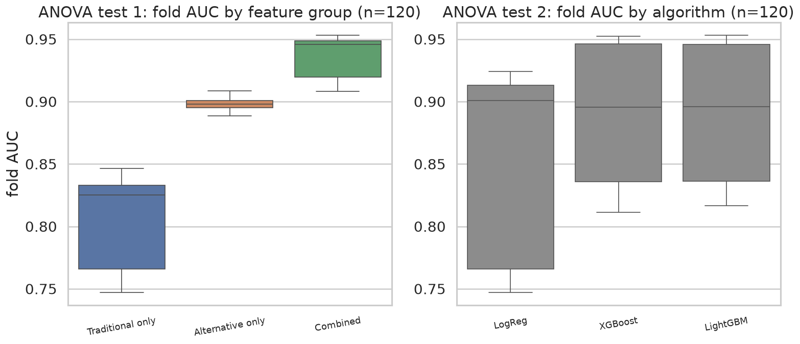
왼쪽이 검증 1, 오른쪽이 검증 2 다. 검증 1 의 세 집단은 상자가 서로 겹치지 않는다. 검증 2 에서는 lightgbm 과 xgboost 의 상자가 거의 완전히 겹쳐, Tukey 결과 (p_adj = 0.6468)를 시각적으로 확인할 수 있다.
두 검정의 η² 는 0.9933 과 0.9658 이다. 명세의 해석 기준(0.14 이상이면 Large)에 비추면 극단적으로 큰 값이다. 이 값을 "대안 데이터가 성능의 99% 를 설명한다"로 읽으면 안 된다.
η² 는 집단간 제곱합 / 전체 제곱합 이다. 분모의 대부분을 집단간 분산이 차지하려면 집단 내 분산이 작아야 한다. 본 실험에서 집단 내 표준편차는 0.0024 ~ 0.0047 이다.
작은 이유는 실험 설계 때문이다.
즉 η² 가 큰 것은 효과가 실무적으로 크다는 뜻이 아니라, 분모가 작게 나오는 설계의 결과다. 실험 설계상 필연적인 과대평가다.
같은 이유로 p-value 는 실제보다 작게 나온다. ANOVA 는 관측치의 독립성을 가정하는데 반복 CV fold 는 완전히 독립이 아니다. p = 9.64 × 10⁻⁶³ 같은 값을 문자 그대로 "우연일 확률이 10⁻⁶³" 로 읽어서는 안 된다.
그래서 판단 기준을 Tukey HSD 의 mean_diff 로 옮긴다.
| 비교 | mean_diff | 실무적 판단 |
|---|---|---|
combined vs traditional_only | +0.1096 | AUC 0.11 차이 — 의미 있는 개선 |
alternative_only vs traditional_only | +0.0562 | 의미 있는 개선 |
combined vs alternative_only | +0.0534 | 의미 있는 개선 |
xgboost vs lightgbm | +0.0008 | 무의미 (표준편차보다 작다) |
같은 검정 안에서 η² 는 둘 다 0.95 를 넘지만, mean_diff 는 0.11 과 0.0008 로 130배 차이가 난다. η² 만 보면 두 검정이 비슷하게 강력해 보이지만 실제 함의는 전혀 다르다.
src/statistics/anova.py 는 η² 가 설정된 임계값(anova.eta_squared_extreme = 0.90)을 넘으면 결과 JSON 에 effect_size_note 필드로 이 주의사항을 자동 첨부한다. API 응답과 대시보드 통계 검증 탭에도 경고로 표시된다.
mean_diff 로 한다 — combined vs traditional +0.1096 은 의미 있고, xgboost vs lightgbm +0.0008 은 무의미하다.이 장은 결과가 아니라 과정의 기록이다. 앞 장의 수치가 믿을 만하다고 주장하려면, 그 수치가 틀렸던 순간과 그것을 어떻게 잡았는지를 함께 보여야 한다.
각 항목은 증상 → 원인 → 조치 → 재발 방지 순으로 적는다. 재발 방지는 자동 테스트로 강제되는 것과 사람이 지켜야 하는 절차를 구분해 적었다. 이 구분을 하다가, 재발 방지 테스트가 있다고 생각했던 두 건에 실제로는 테스트가 없다는 것을 발견해 이 장을 쓰는 중에 추가했다(9.4절).
| # | 발견 | 증상 | 원인 | 조치 | 재발 방지 |
|---|---|---|---|---|---|
| 1 | 9세션 | 거절 사유가 워터폴과 다른 피처를 가리킴 | 역스케일한 표시값을 모델에 넣어 SHAP 계산 | 모델 입력과 표시값(display_row) 분리 | 자동 test_display_row_changes_values_not_ranking |
| 2 | 9세션 | "동일 연령대 평균 −0회" 출력 | 씬파일러 센티넬(−1)이 참조 평균에 섞임 | 결측 플래그가 선 행을 평균에서 제외 | 자동 test_reference_value_excludes_flagged_sentinel_rows (17세션 추가) |
| 3 | 13세션 | /explain 이 연체 '기록 없음' 입력에서 500 | float(None) — 핵심 대상 집단인 씬파일러가 그대로 걸리는 경로 | 센티넬 표기 + "기록이 없습니다" 문장 분기 | 자동 test_explain_accepts_missing_delinquency (17세션 추가) |
| 4 | 12세션 | 재학습 후 /anova 가 이전 결과 서빙 (F=4514.60, 현행 4245.65) | 재학습 뒤 ANOVA 재실행 누락 | 재실행 | 수동 — 부트스트랩은 파일이 없을 때만 생성하므로 재학습 후 갱신을 강제하지 못한다 |
| 5 | 12세션 | 전처리기 joblib 을 다른 프로세스에서 못 읽음 | python -m 으로 저장하면 클래스 __module__ 이 "__main__" | 저장 CLI 를 run_preprocess.py 로 분리 | 자동 API 기동 테스트가 전처리기 로드를 확인 |
| 6 | 8세션 | 챔피언 선정 근거가 통계와 불일치 | Tukey 에서 XGB vs LGBM 유의차 없음인데 "성능 우위"로 서술 | ADR-012 로 근거를 SHAP 지원 성숙도로 교체 | 수동 리포트 교차검증 |
| 7 | 13세션 | 대시보드 import 만으로 앱이 실행돼 테스트에서 "Forms cannot be nested" | main() 호출이 모듈 최상위 | __main__ 가드 | 자동 import 테스트 · AppTest |
| 8 | 14세션 | Docker 이미지 빌드 실패 2건 | BuildKit 빌더 DNS 실패 / fc-cache 바이너리 부재 | build.network: host, fontconfig 설치 | 수동 구성 파일 주석 |
| 9 | 15세션 | ADR-004 v2 개정이 문서에 반영되지 않음 (코드·설정은 반영) | 문자열 치환이 공백 불일치로 조용히 실패, 성공 메시지는 출력됨 | 17줄 → 40줄 복구 | 절차 편집 후 치환 건수를 assert 로 확인 |
| 10 | 16세션 | ADR-001 부기의 SMOTE 비교표가 bias_ratio=0.1 시점 값, 결론이 "combined 에서 SMOTE 근소 우세" | 데이터 재생성 후 ADR 부기를 갱신하지 않음 — stale 수치 3번째 사례 | 최종 데이터로 9쌍 재작성. 17세션에 셈을 재정정(아래) | 수동 교차검증 |
| 11 | 17세션 | SHAP 전역 중요도(PROGRESS·목차)와 ADR-012 Tukey 가 bias_ratio=0.1 시점 값 | 같은 원인 — stale 수치 4·5번째 사례 | 최종 값으로 교체 | 수동 교차검증 |
| 12 | 17세션 | 배치 산출 거절 사유에 "30-59일 연체 횟수가 −1회로, 평균 대비 적습니다" | #3 수정이 API 경로에만 적용. 배치 경로는 센티넬 + 플래그로 들어옴 | 표시 행의 결측 플래그도 확인 | 자동 test_sentinel_with_missing_flag_is_described_as_no_record (수정 전 실패 확인) |
각주: 세션 번호는 PROGRESS.md 작업 로그 기준. 현재 pytest 169건 전부 통과.
16세션에 SMOTE 비교표를 최종 데이터로 고치면서 결론을 "class_weight 가 9쌍 중 7쌍에서 우세하거나 동등"으로 적었다. 17세션에 반올림 전 값으로 다시 세어 보니 다음과 같았다.
| 판정 | 쌍 수 | 내역 |
|---|---|---|
| class_weight 우세 | 7 | traditional 3쌍, alternative XGB·LGBM, combined XGB·LogReg |
| 사실상 동등 | 1 | alternative LogReg (차이 −0.00005) |
| SMOTE 우세 | 1 | combined LightGBM (−0.0013, CV SD ±0.0025 미만) |
"우세하거나 동등"은 8쌍이 맞다. 같은 문단의 "SMOTE 가 이긴 경우는 한 쌍뿐"과도 모순이었다. 결론의 방향(class_weight 채택)은 바뀌지 않지만, 오류를 고친 문장에 새 오류가 들어간 사례다.
| 항목 | 기록돼 있던 값 (bias_ratio=0.1) | 최종 값 (bias_ratio=0.3) |
|---|---|---|
SHAP 1위 telecom_payment_rate | 1.3460 | 1.0272 |
| SHAP 2위 | RevolvingUtilization 0.7769 | spending_consistency 0.8200 |
| 1위 / 2위 배율 | 1.7배 | 1.25배 |
| 대안 / 전통 피처당 평균 | 0.6563 / 0.2011 (3.3배) | 0.6374 / 0.2010 (3.2배) |
| ADR-012 Tukey XGB vs LGBM | mean_diff +0.0009, p_adj 0.6137 | +0.0008, 0.6468 |
| ADR-012 학습 시간 근거 | XGB 18.3초 vs LGBM 16.8초 | XGB 19.0초 vs LGBM 22.3초 |
"대안 피처가 1위다", "두 알고리즘은 유의차가 없다"는 결론은 그대로다. 그러나 2위 피처가 무엇인지, LightGBM 이 더 빠른지는 사실이 뒤집혔다. 옛 값은 PROGRESS·목차를 거쳐 6장 작성 계획에까지 옮겨져 있었고, 6장을 쓰면서 global_importance.csv 와 대조하다가 드러났다.
| 사례 | 발견 | 남아 있던 곳 | 발견 경위 |
|---|---|---|---|
① /anova 결과 (#4) | 12세션 | API 사전 계산 JSON | /anova 엔드포인트 구현 중 발견 |
| ② 4장 인용 수치 3건 | 15세션 | 리포트 초안 (v1/v2 비교표 조합 혼용, 측정 시점 미표기, uplift 표 이전 실행 값) | 장 작성 후 교차검증 |
| ③ ADR-001 SMOTE 표 (#10) | 16세션 | ADR 부기 | 5장 작성 중 교차검증 |
| ④ SHAP 전역 중요도 (#11) | 17세션 | PROGRESS.md, 리포트 목차 | 6장 작성 중 CSV 대조 |
| ⑤ ADR-012 Tukey · 학습 시간 (#11) | 17세션 | ADR 본문, simulator_diagnosis.md | 옛 수치 문자열로 저장소 전체 검색 |
다섯 건 모두 11세션의 데이터 재생성(ADR-002 v3, bias_ratio 0.1 → 0.3) 이전 값이다. 재생성은 산출물 파일(모델, CSV, JSON, 그림)을 전부 새로 만들었다. 그러나 그 전에 산출물에서 사람이 옮겨 적은 문서 속 수치는 누구도 다시 만들지 않았다. ①만 산출물 자체가 낡은 경우이고, 나머지 넷은 산출물은 최신인데 문서가 낡은 경우다.
이 유형이 위험한 이유는 그럴듯하기 때문이다. 옛 값과 새 값은 자릿수가 같고 대부분 결론의 방향도 같다. 그래서 읽는 사람이 이상함을 느끼지 못한다. 하지만 ③은 결론을 뒤집었고 ("SMOTE 근소 우세" → "class_weight 7쌍 우세"), ④는 사실(2위 피처)을 바꿨다.
| 대책 | 적용 | 효과 |
|---|---|---|
| 장마다 인용 수치를 산출물에서 다시 계산해 대조 | 15세션부터 | ②~⑤ 를 전부 이 절차로 잡았다 |
표마다 측정 조건 각주 (bias_ratio, 표본, 임계값) | 15세션부터 | 옛 수치가 섞였을 때 조건이 달라 보여 눈에 띈다 |
| 옛 수치 문자열로 저장소 전체 검색 | 17세션 | ⑤ 를 찾았다. 한 곳에서 stale 을 발견하면 같은 값이 다른 곳에도 있다 |
| 문서 수치를 산출물에서 자동 생성 (템플릿화) | 미적용 | 근본 대책이지만 적용하지 않았다(10장) |
| 사례 | 고친 곳 | 남은 곳 | 드러나기까지 |
|---|---|---|---|
| #3 → #12 '기록 없음' 분기 | API 경로 (null 입력) | 배치 경로 (센티넬 + 플래그) | 4세션 |
| #9 ADR-004 v2 | 코드 · 설정 | ADR 문서 | 4세션 |
| #10 재정정 | 비교표 수치 | 결론 문장의 셈 | 1세션 |
세 사례 모두 같은 정보가 두 경로 이상으로 흐르는데 한 경로만 고쳤다. '기록 없음'이라는 정보는 API 에서는 None 으로, 배치에서는 −1 과 플래그로 들어온다. ADR-004 의 목적함수라는 정보는 설정 파일과 문서 두 곳에 산다. 수정한 곳에서 테스트가 통과하면 끝났다고 느끼기 쉽다.
#9 는 특히 교훈이 크다. 편집 도구가 성공 메시지를 냈지만 실제로는 아무것도 바꾸지 않았다. 이후로는 텍스트 편집 뒤 치환 건수를 assert 로 확인한다. 17세션에도 ADR-012 편집 1건이 표 구분선(|---|---:|) 불일치로 실패했는데, 이번에는 도구가 실패를 보고해 즉시 다시 적용했다. 조용히 실패했다면 사례 ⑤ 가 수정된 척 남았을 것이다.
| 재발 방지 | 건수 | 해당 |
|---|---|---|
| 자동 테스트 | 6 | #1, #2, #3, #5, #7, #12 |
| 수동 절차 · 문서 | 6 | #4, #6, #8, #9, #10, #11 |
자동 테스트 6건 중 #2 와 #3 은 이 장을 쓰기 전까지 테스트가 없었다. 목차 초안에는 "각 오류는 재발 방지 테스트를 함께 추가했다"라고 적어 두었는데, 테스트 이름을 표에 채우려고 확인해 보니 #3 은 /predict 경로만 검사하고 있었고(/explain 은 검사하지 않음), #2 는 참조 평균 테스트가 센티넬 제외를 확인하지 않았다. 두 테스트를 추가해 pytest 는 166 → 169건이 됐다 (#12 회귀 테스트 포함).
수동 6건은 대부분 문서와 산출물의 정합성 문제다. 코드의 오류는 테스트로 막을 수 있었지만, "문서에 적힌 숫자가 최신인가"는 테스트가 검사하지 않는다. 이 프로젝트에서 가장 많이 반복된 오류가 바로 그 영역에 있다.
앞 장들에서 필요한 곳마다 단서를 달았다. 이 장은 그중 결론의 해석 범위를 제한하는 것 일곱 가지를 모은다. 각 항목은 무엇이 한계인지, 어떤 결론에 영향을 주는지, 왜 고치지 않았는지 순으로 적는다.
이 장의 공통 측정 조건. 챔피언
xgboost | combined | class_weight,bias_ratio = 0.3최종 데이터, test 22,500행, 승인 임계값 0.30. 다른 조건은 표 각주에 적었다.
챔피언의 test AUC 0.9453 은 실제 신용평가 모델의 통상 수준(0.85 ~ 0.88)보다 높다. 대안 데이터의 실제 예측력이 아니라 명세 §4 의 상관 요건을 부도율 6.68% 이진 타겟에 그대로 적용한 결과다.
| 대안 피처 1개의 |corr| | Cohen's d | 단일 피처 AUC |
|---|---|---|
| 0.30 | ≈ 1.26 | ≈ 0.81 |
| 0.49 | — | ≈ 0.94 |
각주: 4.3절 효과크기 환산. 부도율 6.68% 에서의 점이연상관 기준.
대안 피처 하나만으로 전통 모델 전체(0.8355)에 맞먹는다. 실제 통신·공과금 데이터의 개별 변수는 이보다 훨씬 약하다.
영향받는 결론. 절대 수치 전부 — 5장의 AUC·KS, 6장의 대안 피처 SHAP 비중(54.9%), 7장 편향의 크기. 유지되는 결론. 피처 그룹 간 순서(traditional < alternative < combined), 씬파일러 유형 간 uplift 순서, 공정성 경로의 구분(성별 vs 연령대)처럼 상대 비교로 표현된 결론.
고치지 않은 이유. 목표 구간(0.85~0.90)에 넣으려면 상관을 0.22~0.26 까지 낮춰야 했고, 이는 명세 §4 위반이다(4.5절). 명세 준수를 택하고 해석 범위를 제한했다.
| 피처 | train |corr| | 여유 | 전체 |corr| | 여유 |
|---|---|---|---|---|
spending_consistency | 0.3285 | +0.0285 | 0.3291 | +0.0291 |
regular_payment_count | 0.3194 | +0.0194 | 0.3194 | +0.0194 |
telecom_payment_rate | 0.3183 | +0.0183 | 0.3195 | +0.0195 |
app_login_frequency | 0.3105 | +0.0105 | 0.3094 | +0.0094 |
utility_payment_rate | 0.3099 | +0.0099 | 0.3107 | +0.0107 |
각주: bias_ratio = 0.3 최종 데이터, 피처와 부도 라벨의 Pearson 상관. train 은 train.parquet 104,999행 (tests/test_simulator.py 의 검사 대상이며 ADR-001 "한계" 절의 값), 전체는 train·valid·test 149,999행.
요건은 두 기준 모두에서 충족하지만 여유가 얇고, 가장 얇은 피처가 어느 쪽인지조차 표본에 따라 바뀐다 (train 에서는 utility, 전체에서는 app_login). 편향 주입 대상인 두 피처(telecom, utility)는 bias_ratio 를 올릴수록 상관이 떨어지며, 0.4 에서 이미 0.3014 / 0.2932 로 utility 가 요건을 벗어난다 (ADR-002, 전체 149,999행). 따라서 7.3절 민감도 실험은 0 ~ 0.3 범위에서만 유효하다.
고치지 않은 이유. 여유를 늘리려면 generation_correlation 을 올려 데이터를 재생성해야 하고, 그러면 F1~F5 의 모든 수치를 다시 만들어야 한다. 9장에서 본 것처럼 재생성은 문서 속 수치를 낡게 만드는 가장 큰 원인이었다. 현재 데이터로 동결했다.
| 지표 | 값 |
|---|---|
| 재현율 (부도 탐지) | 0.8936 |
| 정밀도 | 0.2899 |
| F1 | 0.4378 |
| 전체 승인율 | 0.7940 |
임계값 0.30 은 재현율을 우선한 설정이다. 부도의 89% 를 잡아내지만 거절한 고객 중 실제 부도는 29% 에 그친다. 나머지 71% 는 6.4절의 경계 거절 고객처럼 부도가 나지 않았을 사람이다.
여기에 척도 문제가 겹친다. 모델을 class_weight='balanced' 로 학습해 예측 확률이 가중된 척도 위에 있다(6.1절, 기준값 0.5295). 임계값 0.30 은 "실제 부도 확률 30%"가 아니다.
고치지 않은 이유. 실무라면 승인율 목표와 대손율 허용치를 넣은 비용 함수로 임계값을 골라야 한다. 그러나 임계값을 바꾸면 승인 결정이 바뀌고, DI Ratio · Equalized Odds · ThresholdOptimizer 결과가 전부 연동돼 바뀐다. 5~7장의 수치를 하나의 임계값 위에서 정합시키려고 ADR-003 의 값으로 동결했다.
GMSC 에는 성별이 없다. 시뮬레이터가 타겟과 독립인 무작위 50:50 으로 만들었다 (test 세트 female 11,181 / male 11,319).
이 전제 때문에 7.3절의 성별 결과는 실증이 아니라 설계의 확인이다. bias_ratio = 0 에서 gender DI 가 1.0030 인 것은 발견이 아니라 무작위 합성이면 당연히 나오는 값이다. 실제 성별은 소득·직업· 금융 이용 패턴과 얽혀 있어, 7장에서 연령대에서 본 피처 내재 상관 경로가 성별에도 존재할 가능성이 높다. 이 실험은 그 경로를 구조적으로 배제했다.
반면 연령대(age_group)는 실제 GMSC age 에서 구간화했으므로 7.3절의 연령대 결과는 실제 연령 분포 위에서 나온 것이다. 다만 대안 피처와 연령의 상관(nuisance 의 연령 가중 0.3)은 시뮬레이터가 정했다.
고치지 않은 이유. 실제 성별이 있는 데이터는 German Credit 뿐인데 표본이 부족하다(10.7절).
| 검정 | η² | 집단 내 SD | Tukey mean_diff |
|---|---|---|---|
| 검증 1 (피처 그룹) | 0.9933 | 0.0024 ~ 0.0047 | combined vs traditional +0.1096 |
| 검증 2 (알고리즘) | 0.9658 | 0.0024 ~ 0.0037 | XGBoost vs LightGBM +0.0008 |
각주: 8장. RepeatedStratifiedKFold(5×4), 그룹당 n=20, 나머지 요인 champion 조합 고정(ADR-011).
두 검정의 η² 가 모두 0.95 를 넘지만 평균 차이는 130배 다르다. η² 가 큰 것은 효과가 크다는 뜻이 아니라, 집단마다 구성이 고정돼 있고 같은 104,999행을 반복해 쪼갠 fold 라 집단 내 변동이 작기 때문이다. 같은 이유로 fold 가 독립이 아니어서 p-value(9.64 × 10⁻⁶³ 등)는 실제보다 작다.
영향받는 결론. "통계적으로 유의하다"는 진술의 강도. 판단 기준은 mean_diff 의 절대 크기로 옮겼다(8.5절). 고치지 않은 이유. 명세 §5 가 fold AUC 를 관측 단위로 하는 ANOVA 를 요구한다. 독립 표본을 얻으려면 train 104,999행을 겹치지 않는 20조각으로 나눠 각각 학습·평가해야 하는데, 그러면 조각당 약 5,250행으로 줄어 부도 건수가 350건 안팎에 그치고 집단 하위 분석이 불안정해진다. 설계를 유지하고 해석을 제한했다.
ThresholdOptimizer 는 집단마다 두 임계값 규칙을 확률적으로 섞는다(7.4절). 예측 확률이 두 임계값 사이에 있는 고객은 동전 던지기로 승인·거절이 갈린다.
| 보호 속성 | 집단 | 확률적 결정 구간 | 해당 고객 | 비율 | 상수 예측 확률 p_ignore |
|---|---|---|---|---|---|
| gender | female | 0.4285 < p ≤ 0.4492 | 82 | 0.73% | 0.85% |
| male | 0.2878 < p ≤ 0.4087 | 439 | 3.88% | 0 | |
| 합계 | 521 | 2.32% | |||
| age_group | 20-34 | 0.5644 < p ≤ 0.7164 | 148 | 5.19% | 0 |
| 35-54 | 0.5453 < p ≤ 0.7107 | 437 | 4.49% | 0.06% | |
| 55+ | 0.1956 < p ≤ 0.4159 | 726 | 7.33% | 1.59% | |
| 합계 | 1,311 | 5.83% |
각주: test 22,500행에 챔피언 예측 확률을 넣고 fairness_results.json 의 집단별 조정 임계값으로 계산했다. p_ignore 는 임계값 규칙 대신 상수 예측을 쓸 확률로, 구간 밖 고객에게도 적용된다.
평가에서는 random_state 를 고정해 재현되지만, 실서비스에서 한 고객에게는 재현되지 않는다. age_group 완화를 적용하면 고객 17명 중 1명꼴(5.83%)의 결정이 난수에 달린다. 6장에서 공들인 거절 사유 설명은 이 고객들에게 의미를 잃는다. "당신이 거절된 이유"의 상당 부분이 난수이기 때문이다.
ThresholdOptimizer.predict 는 sensitive_features 인자를 필수로 받는다. 즉 ADR-008 로 학습에서 제외한 성별·연령대를 개별 고객의 승인 결정 시점에 직접 사용한다. 같은 예측 확률 0.40 이라도 남성에게는 98.5% 확률로 p > 0.2878 규칙이 적용돼 거절되고, 여성에게는 두 규칙(p > 0.4492, p > 0.4285) 모두 승인이다(p_ignore 0.85% 제외).
집단 간 결과의 격차(disparate impact)를 줄이는 대가로 집단에 따른 처우의 차이(disparate treatment) 를 도입하는 것이다. 7.5절의 규제 관점 표에서 "민감정보 사용 금지 — 학습 피처에서 제외"라고 적었지만, 완화 단계까지 포함하면 이 대응은 학습 단계에만 성립한다.
고치지 않은 이유. 명세 §4 가 완화 전/후 비교를 요구하고, 같은 모델·같은 확률 위에서 비교하려면 후처리가 가장 깨끗하다(ADR-004). 결정론적 대안(집단별 단일 임계값)이나 보호 속성을 결정에 쓰지 않는 in-processing 기법(ExponentiatedGradient 등)은 11장 향후 과제로 남긴다.
src/data/loader.py 에 load_german_credit()(UCI id=144)를 구현해 두었지만 분석에는 쓰지 않았다(ADR-006). 표본이 1,000건이라 반복 CV 와 성별 × 연령대 하위 집단 분석을 하면 집단당 수십 건으로 떨어진다.
그 결과 모든 결론이 단일 데이터셋(GMSC) 위의 결론이다. GMSC 는 미국 데이터이며 국내 씬파일러의 분포와 다르다. German Credit 은 실제 성별·연령 속성을 담고 있어 10.4절의 합성 성별 한계를 일부 보완할 수 있었지만, 그 기회도 쓰지 않았다.
| 한계 | 위치 |
|---|---|
| PSI 는 무작위 층화 분할이라 분포 이동 검출 조건으로는 관대하다 | 5.2절 |
극단 이상치 때문에 RevolvingUtilization Dependence Plot 은 x 축을 99 백분위에서 잘라 그렸다(이상치 20개 제외) | 6.3절 |
| 설명 소거로 소득·연령의 SHAP 부호가 역설적이다 (시뮬레이터 구조의 산물) | 6.3절 |
| 방향 일치 검증은 부호 모순만 잡으며, 참조 평균과 SHAP 기준값이 다르다 | 6.5절 |
| 반사실 설명("무엇을 바꾸면 승인되는가")은 수동 분석이며 API 로 구현하지 않았다 | 6.4절 |
| 문서 속 수치를 산출물에서 자동 생성하지 않아 stale 수치가 5번 발생했다 | 9.2절 |
전통 신용정보가 결손된 씬파일러에게 대안 데이터는 통계적으로 유의한 AUC 개선을 제공한다 (씬파일러 집단 +0.152, 전체 +0.110; One-way ANOVA F=4245.65, p < 0.001, η²=0.9933). 개선폭은 전통 피처의 결손이 클수록 커진다 (thin:both +0.188 > thin:missing_only +0.168 > thin:history_only +0.101 > 일반 +0.095).
그러나 보호 속성을 학습에서 제외해도(ADR-008) 편향은 대안 피처를 경유해 전파된다. 그 경로는 두 종류로 구분된다.
| 경로 | 대상 | 근거 | 특징 |
|---|---|---|---|
| 측정 편향 | 성별 | bias_ratio=0 에서 DI 1.0030 → 0.3 에서 0.9191 (단조 반응) | 주입한 편향이 원인. 원인을 제거하면 사라진다 |
| 피처 내재 상관 | 연령대 | bias_ratio=0 에서 이미 min/max DI 0.7840, 0.3 에서 0.7747 (거의 불변) | 대안 피처가 연령을 신호원으로 쓰는 설계에서 옴 |
후자는 편향 원인 제거가 예측력 손실을 수반한다. 연령대 격차를 없애려면 대안 피처에서 연령 신호를 빼야 하는데, 그러면 피처의 예측력 자체가 줄어든다(ADR-001 v2 의 w 레버 실험에서 확인한 것과 같은 구조다). 데이터를 고치는 대신 사후 임계값 조정(ThresholdOptimizer)이 현실적 대응이며, 실제로 EO FPR 차이를 0.1487 → 0.0155 로 낮추면서 승인율을 0.7940 → 0.8492 로 유지했다.
각주: 위 세 문단과 표는 docs/report_assets/fairness_narrative.md §5 의 확정 문장을 그대로 옮겼다. 수치 조건은 5·7·8장과 같다(챔피언 xgboost | combined | class_weight, bias_ratio = 0.3, test 22,500행, 임계값 0.30). 단 "현실적 대응"의 비용은 10.6절에서 따로 다룬다.
1장에서 세운 세 질문에 대해 이 프로젝트가 보인 것을 정리한다.
| 발견 | 근거 | 장 |
|---|---|---|
피처 그룹 순서가 6개 조합 전부에서 traditional < alternative < combined | test AUC 0.8355 / 0.8902 / 0.9460, Tukey 3쌍 유의 | 5.3, 8.2 |
| 기여는 전통 피처 결손에 비례 | uplift history_only +0.1013 < missing_only +0.1681 < both +0.1883 | 5.4 |
| 통합 모델은 세그먼트 간 평가 품질 격차를 줄인다 | 세그먼트 간 AUC 편차 0.1131 → 0.0195 | 5.4 |
| 부스팅 두 알고리즘은 구분되지 않는다 | XGB vs LGBM mean_diff +0.0008, p_adj 0.6468 | 8.3 |
| 발견 | 근거 | 장 |
|---|---|---|
| 판단의 중심은 대안 피처, 씬파일러일수록 더 | 대안 5개 전부 7위 내, Top 5 중 대안 수 history_only 3.00 < both 3.34 | 6.2 |
| XAI 의 가치는 경계 사례에서 드러난다 | p=0.375 로 거절된 비부도 씬파일러가 통신비·공과금 각 +2%p 로 승인(p=0.2922) | 6.4 |
| 정확한 SHAP 값이 정확한 설명을 보장하지 않는다 | 설명 소거로 "소득이 높아 불리", 결측을 숫자로 다루면 "연체 −1회로 적습니다" | 6.3, 6.6 |
| 발견 | 근거 | 장 |
|---|---|---|
| 사라지지 않는다 | 연령대 min/max DI 0.7747, EO FPR 차이 0.1487 (기준 위반) | 7.2 |
| 전파 경로는 측정 편향과 피처 내재 상관 두 종류 | 11.1 표 | 7.3 |
| 완화는 작동하나 목적함수가 결정적이다 | accuracy 는 승인율 0.95 로 심사 기능 상실, balanced_accuracy 는 0.82~0.85 유지 | 7.4 |
| 완화는 새로운 문제를 들여온다 | age_group 완화 시 고객 5.83% 가 확률적 결정, 보호 속성을 결정 시점에 사용 | 10.6 |
① 대안 데이터의 효과는 세그먼트별로 평가해야 한다. 전체 uplift(+0.110)는 씬파일러 유형 간 차이 (+0.101 ~ +0.188)를 가린다. 이 프로젝트에서도 씬파일러를 한 덩어리로만 봤다면 history_only 와 both 사이의 1.9배 차이를 놓쳤다(ADR-010).
② 보호 속성 제외는 필요하지만 충분하지 않다. 대안 데이터 도입 전에 편향을 주입하지 않은 기준 상태에서 공정성을 측정해야 한다. 7.3절의 bias_ratio = 0 행이 그 역할을 했고, 연령대 격차가 주입 편향이 아니라 피처 구조에서 온다는 것을 그 한 줄이 보여줬다. 통신 요금 납부 이력이나 앱 사용 빈도처럼 연령과 자연 상관되는 대안 데이터는 실제로 흔하다.
③ 설명의 충실성은 따로 설계해야 한다. 신용정보법 제36조의2 는 설명의 존재를 요구하지만, 틀린 설명은 설명이 없는 것보다 해롭다. 이 프로젝트에서는 SHAP 입력 스케일 분리, 합성 샘플을 쓰는 SMOTE 기각, 결측의 '기록 없음' 분기, 방향 불일치 표지가 그 역할을 했다(6.7절).
④ 공정성 완화는 지표만 보고 고르면 안 된다. accuracy 목적함수는 DI 1.0000 이라는 가장 좋은 공정성 지표를 줬지만, 그것은 거의 전원을 승인해서 얻은 값이었다. 승인율·정밀도 같은 심사 기능 지표와 결정의 일관성을 함께 봐야 한다.
⑤ 산출물을 재생성하면 문서를 전수 대조해야 한다. 이 프로젝트에서 가장 많이 반복된 오류는 코드가 아니라 문서 속 낡은 수치였다(9장, 5건). 결론은 같아 보여도 사실이 바뀌어 있었다.
| 과제 | 해소하는 한계 | 비고 |
|---|---|---|
| 실제 대안 데이터 또는 German Credit 으로 외부 검증 | 10.1, 10.4, 10.7 | 절대 수치와 실제 성별 경로 확인 |
| 반사실 설명 API | 6.4 | 명세 보너스 과제 2. 고객이 바꿀 수 있는 피처로 탐색 제한 |
| LIME 과 SHAP 의 Top 5 일치율 비교 | 6.5 | 명세 보너스 과제 1 |
| 세그먼트 × 모델 구성 Two-way ANOVA | 10.5 | 명세 보너스 과제 3. uplift 의 교호작용을 직접 검정 |
| 비용 함수 기반 임계값 최적화 후 공정성 재평가 | 10.3 | 임계값을 바꾸면 7장 전체를 다시 계산해야 한다 |
| 결정론적 완화 또는 in-processing 기법 비교 | 10.6 | 확률적 결정과 결정 시점의 보호 속성 사용을 피한다 |
| 리포트 수치를 산출물에서 자동 생성 | 9.2 | stale 수치의 근본 대책 |
both +0.188 > history_only +0.101; F=4245.65, p<0.001).| ADR | 주제 | 결정 요지 | 개정 이력 |
|---|---|---|---|
| 001 | 대안 데이터 시뮬레이터 | 대안 5변수 = 타겟 신호 + 공유 잠재요인(소득·연령 신호 + 공통 노이즈) 구조. 생성 상관 0.31~0.35, w = 0.85 | v1 개별 노이즈 → v2 공유 잠재요인(결합 누수 제거). 부기: 불균형 처리 class_weight 채택. 2026-09-11 상관 측정 조건 명시 |
| 002 | 편향 주입 (bias_ratio) | female · 20-34 의 통신·공과금 납부율을 bias_ratio × 0.3 하향. 타겟은 불변 | v1 대상 55+ → v2 20-34, 계수 0.1 → 0.3 → v3 기본 bias_ratio 0.3 |
| 003 | 점수 매핑 · 임계값 | score = 1000 × (1 − p), 등급 A≥800 ~ E, 승인 p < 0.30 | 사후 관찰: 임계값 0.30 의 정밀도 0.2899 기록 |
| 004 | 공정성 완화 기법 | Fairlearn ThresholdOptimizer(equalized_odds) — 후처리라 전/후를 같은 모델 위에서 비교 | v2 목적함수 accuracy → balanced_accuracy_score |
| 005 | ANOVA 관측 단위 | RepeatedStratifiedKFold(5×4) → 그룹당 n = 20 | — |
| 006 | 메인 데이터셋 | GMSC. German Credit 은 로더 함수만 두고 미사용(표본 1,000건) | — |
| 007 | 연령 이상치 | age < 18 행 제거(1행). 대체하지 않음 | — |
| 008 | 보호 속성 | gender · age_group 을 학습 피처에서 제외, 데이터에는 유지 | — |
| 009 | credit_history_months | 거래 이력 개월수 합성으로 씬파일러 OR 판정 완성. 판정 근거 컬럼은 학습 제외 | — |
| 010 | 씬파일러 유형 분화 | missing_only 40% / history_only 30% / both 30% | — |
| 011 | ANOVA 통제 방식 | 비교 요인 외 나머지를 챔피언 조합으로 고정, pooled 결과는 참고치로 병기 | — |
| 012 | 챔피언 알고리즘 근거 | XGBoost 채택, 근거는 성능이 아니라 SHAP 지원 성숙도(Tukey p_adj = 0.6468) | 2026-09-11 Tukey·학습시간 수치를 최종 데이터로 갱신 |
원문은 docs/decisions/ADR-0NN-*.md. 각 ADR 은 결정 · 근거 · 버린 대안을 함께 적는다.
기본 주소 http://localhost:8000, 문서 /docs(Swagger UI). 모든 요청·응답에 Pydantic 스키마가 있다.
| # | 메서드 · 경로 | 입력 | 주요 응답 필드 |
|---|---|---|---|
| 1 | GET /health | — | status(healthy/degraded), model_version, champion, artifacts_loaded, timestamp |
| 2 | POST /predict | 고객 정보 JSON | credit_score(0~1000), approval_status, default_probability, risk_grade(A~E), threshold |
| 3 | POST /explain | 고객 정보 JSON | rejection_reasons[5], total_rejection_factors, shap_values(18개), base_value |
| 4 | GET /metrics | — | auc, ks, precision, recall, f1, psi |
| 5 | GET /fairness | — | di_ratio, di_ratio_min_max, equalized_odds_tpr_diff, equalized_odds_fpr_diff, worst_attribute, by_attribute |
| 6 | GET /fairness/mitigation | — | before / after / delta, adjusted_thresholds(집단별), note |
| 7 | GET /anova | — | test_1, test_2 — f_statistic, p_value, effect_size_eta_squared, post_hoc_tukey, diagnostics, effect_size_note |
POST /predict, POST /explain)| 그룹 | 필드 | 비고 |
|---|---|---|
| 전통 | RevolvingUtilizationOfUnsecuredLines, age, DebtRatio, MonthlyIncome, NumberOfOpenCreditLinesAndLoans, NumberRealEstateLoansOrLines, NumberOfDependents | MonthlyIncome · NumberOfDependents 가 null 이면 학습 중앙값으로 대체 |
| 전통 (연체) | NumberOfTime30-59DaysPastDueNotWorse, NumberOfTime60-89DaysPastDueNotWorse, NumberOfTimes90DaysLate | null = 기록 없음(씬파일러). 중앙값 대체 없이 센티넬 + 플래그로 보존 |
| 대안 | telecom_payment_rate, utility_payment_rate, spending_consistency(0~1), regular_payment_count, app_login_frequency | |
| 보호 속성 · 세그먼트 | gender, age_group, credit_history_months | 학습에 쓰이지 않는다. age_group 은 생략 시 age 로 계산 |
필드명은 GMSC 원본 컬럼명(alias)과 snake_case 둘 다 받는다. 알 수 없는 필드는 거부한다(extra="forbid").
rejection_reasons[])rank, feature, feature_name_kr, current_value, reference_value(동일 연령대 평균), shap_contribution(신용도 관점, 음수 = 불리), shap_value_default(부도 관점 원본), explanation, direction_consistent. 명세 §3 의 필수 4개 필드를 포함한다(6.5절).
# 1) 산출물 생성 (약 15분, 최초 1회)
docker compose --profile setup run --rm bootstrap # 또는: bash scripts/bootstrap.sh
# 2) 서비스 기동 → localhost:8000 / 8501 / 5000
docker compose up
# 3) 테스트
pytest # 171건
# 4) 리포트 수치 대조 · HTML 생성
python scripts/verify_report_numbers.py
python scripts/build_report.py # → docs/experiment_report.html부트스트랩에 포함되지 않는 분석(데이터를 여러 번 재생성하므로 별도 실행):
python -m src.analysis.eda # 3·4장 그림 8종
python -m src.fairness.sensitivity # 7.3절 bias_ratio 민감도 (0.0 ~ 0.3 재학습)모든 난수는 config.project.random_state = 42 로 고정돼 있어 같은 입력에서 같은 산출물이 나온다. 예외는 SHAP Summary · Dependence Plot 의 점 배치(렌더링 난수)로, 그림의 픽셀은 달라져도 수치는 같다.
PDF 는 docs/experiment_report.html 을 브라우저에서 열고 인쇄 → PDF로 저장(용지 A4, 배경 그래픽 켜기, 머리글·바닥글 끄기)으로 만든다.
| 파일 | 개수 | 검증 대상 |
|---|---|---|
test_simulator.py | 24 | 대안 5변수 상관 요건, thin_filer_ratio · bias_ratio 반응, 씬파일러 유형 분화 |
test_preprocessor.py | 19 | 결측 처리(센티넬·중앙값), 스케일링, 층화 분할 비율, train 전용 fit |
test_loader.py | 6 | GMSC 로드, age < 18 제거, 결측률 로그 |
test_train.py | 6 | 조합 생성, 불균형 처리 파이프라인, 챔피언 선택 |
test_evaluate.py | 7 | AUC · KS · PSI 계산 |
test_explainer.py | 25 | SHAP 형태·가산성, 거절 사유 5개와 필수 필드, 참조 평균(센티넬 제외), 방향 일치, 한글 조사, 축 절단 |
test_fairness.py | 15 | DI 두 정의, Equalized Odds, WARNING 로그, ThresholdOptimizer 전/후 |
test_anova.py | 22 | F · p · η², Tukey HSD, 정규성·등분산 진단, 통제 vs pooled |
test_api.py | 29 | 7개 엔드포인트 스키마, 응답 시간, 연체 null 입력, OpenAPI · Swagger |
test_dashboard.py | 18 | 탭 5개 렌더링, 모델 파일 미로드(AST 검사), API 미기동 시 동작 |
| 합계 | 171 | 명세 요건: 10개 이상, 80% 이상 통과 → 171개 전부 통과 |
9장의 오류에 대응하는 회귀 테스트: test_display_row_changes_values_not_ranking(#1), test_reference_value_excludes_flagged_sentinel_rows(#2), test_explain_accepts_missing_delinquency(#3), test_sentinel_with_missing_flag_is_described_as_no_record(#12).
리포트에 인용한 수치가 산출물과 어긋나는 것(9.2절의 stale 수치, 5건)을 막으려고 대조를 스크립트로 고정했다.
python scripts/verify_report_numbers.py # 전체
python scripts/verify_report_numbers.py --chapters 3 6 # 일부 장| 항목 | 내용 |
|---|---|
| 방식 | 산출물(data/processed/, 원본 CSV, MLflow 산출 CSV)에서 값을 다시 계산해 문서와 같은 형식으로 만든 뒤, 해당 문자열이 문서의 같은 줄에 있는지 확인 |
| 처리 | 수학 기호 마이너스(−)와 하이픈(-)을 동일 취급, 백분율은 half-up 반올림, 일부 검사는 모델 재학습·API 호출로 값을 얻음 |
| 대조 범위 | 3 · 6 · 9 · 10 · 11장 전 수치와 읽는 법 · 요약 · 1 · 2장 · 부록의 핵심 수치 |
| 제외 | 4 · 5 · 7 · 8장 — 작성 세션에서 같은 방식으로 수작업 대조했고 기록은 PROGRESS.md 에 있다 |
| 한계 | 문서에 값이 있는지만 보고 문맥의 정확성은 보지 않는다. 실행에 수 분이 걸린다. 과거 값 대조는 git 이력에 의존한다 |
| 종료 코드 | 전부 일치 0, 하나라도 불일치 1 |
| 대조 결과 | 2026-09-12 기준 389건 전부 일치 (읽는 법 3 · 요약 38 · 1장 14 · 2장 37 · 3장 80 · 6장 102 · 9장 27 · 10장 36 · 11장 18 · 부록 34) |
| 경로 | 내용 |
|---|---|
models/champion_xgboost_v1.0.pkl 외 3개 | 최종 모델 (알고리즘별 1개 + 챔피언) |
data/processed/{train,valid,test}.parquet | 전처리·분할 결과 (24열) |
data/processed/model_results.csv · fold_auc.csv | 18조합 지표 · fold AUC 360건 |
data/processed/thin_filer_uplift.csv | 세그먼트별 uplift |
data/processed/anova_results.json | ANOVA 두 검정 + Tukey + 진단 + pooled 참고치 |
data/processed/explain/ | 전역 중요도 CSV, 거절 사유 샘플 JSON, 그림 7종 |
data/processed/fairness/ | 공정성 전/후 JSON, bias_ratio 민감도 CSV, 그림 4종 |
docs/report_assets/ | 리포트 그림 24종, 진단 · 공정성 서술 문서 |
mlflow.db · mlruns/ | MLflow run 18개, Model Registry |